10 Bivariate distributions
Upon completion of this chapter you should be able to:
- apply the concept of bivariate random variables.
- compute joint probability functions and the distribution function of two random variables.
- describe and apply the joint density–mass function for mixed bivariate random variables.
- find the marginal and conditional probability functions of random variables in both discrete and continuous cases.
- apply the concept of independence of two random variables.
- use the bivariate normal distribution.
- compute the expectation and variance of linear combinations of random variables.
- interpret and compute the covariance and the coefficient of correlation between two random variables.
- compute the conditional mean and conditional variance of a random variable for some given value of another random variable.
- find the joint distribution of two transformed variables in a bivariate situation, using the change of variable method.
- find the joint distribution of two transformed variables in a bivariate situation, using the distribution function method.
10.1 Introduction
Not all random processes are sufficiently simple to have the outcome denoted by a single variable \(X\). Many situations require observing two (or more) numerical characteristics simultaneously. This chapter discusses the two-dimensional (bivariate) case.
10.2 Bivariate random variables and probability distributions
The joint probability function simultaneously describes how two random variables vary and interact. The set of all possible pairs of outcomes, the joint range (or support) of \((X, Y)\), denoted \(\mathcal{R}_{X,Y}\), is a subset of the Euclidean plane \(\mathbb{R}^2\). Each outcome \((X(s), Y(s))\) (usually written as \((X, Y)\)) is represented as a point \((x, y)\) in this plane, and is called a random vector. As with univariate distributions, discrete and continuous random variables must be distinguished to determine how probabilities are assigned to these points.
Definition 10.1 (Random vector) Let \(X = X(s)\) and \(Y = Y(s)\) be two functions, each assigning a real number to each sample point \(s \in S\). The pair \((X, Y)\) is called a two-dimensional random variable, or a random vector. More formally, write \((X, Y): S \to \mathbb{R}^2\).
Example 10.1 (Bivariate discrete) Consider a random process where:
- two coins are tossed, and \(X\) is the number of heads that show on the two coins; and
-
one die is rolled repeatedly, and \(Y\) is the number of rolls needed to roll a
 .
.
\(X\) is discrete with \(\mathcal{R}_X = \{0, 1, 2\}\). \(Y\) is discrete with a countably infinite range \(\mathcal{R}_Y = \{ 1, 2, 3, \dots\}\).
The range is \(\mathcal{R}_{X\times Y} = \{ (x, y)\mid x = 0, 1, 2; y = 1, 2, 3, \dots\}\).
As with the univariate case, the description and language for the probability function are different, depending on whether the random variables \(X\) and \(Y\) are discrete or continuous (though the ideas remain similar).
When \(X\) and \(Y\) are discrete, a joint probability mass function (joint PMF) is defined.
Definition 10.2 (Discrete joint probability mass function) Let \((X, Y)\) be a \(2\)-dimensional random variable. The joint probability mass function (or joint PMF), denoted \(p_{X, Y}(x, y)\), assigns a probability to each pair of outcomes \((x_i, y_j)\) such that \(p_{X, Y}(x_i, y_j) = \Pr(X = x_i \cap Y = y_j)\). This function must satisfy: \[\begin{align} p_{X, Y}(x, y) &\geq 0 \quad \text{for all } (x, y) \in \mathcal{R}_{X\times Y}\notag \\ \sum_{(x_i, y_j)\in \mathcal{R}_{X\times Y}} p_{X, Y}(x_i, y_j) &= 1. \tag{10.1} \end{align}\] The collection of all triples \(\{(x_i, y_j, p_{X,Y}(x_i, y_j))\}\) for all \(i, j\) constitutes the joint probability distribution of \((X, Y)\).
When both \(X\) and \(Y\) are continuous, a joint probability density function (joint PDF) is defined.
Definition 10.3 (Continuous joint probability density function) The joint probability density function (joint PDF) function of the pair of continuous random variables \(X\) and \(Y\) is a function \(f_{X, Y}(x, y)\) such that:
- \(f_{X, Y}(x, y) \ge 0\) for all \((x, y) \in \mathcal{R}_{X\times Y}\), and
- The total volume under the surface is \(1\): \[ \iint_{\mathcal{R}_{(X, Y)}} f_{X,Y}(x, y) \, dx \, dy = 1. \] The probability that \((X, Y)\) falls within a specific region \(A\) in the plane is the volume above that region: \[ \Pr((X, Y) \in A) = \iint_A f_{X,Y}(x, y) \, dx \, dy. \]
While not common, the case where one variable, say \(X\), is continuous and the other, say \(Y\), is discrete also occurs. This gives a mixed joint distribution. The total probability is still \(1\) by using a hybrid approach: \[ \sum_{x \in \mathcal{R}_X} \int_{-\infty}^{\infty} f_{X,Y}(x, y) \, dy = 1 \] where \(f_{X,Y}(x, y)\) is the joint density-mass function. To fully understand the mixed joint distribution case, conditional distributions must first be studied (Sect. 10.4), so this case is deferred until later (Sect. 10.5).
Example 10.2 (Bivariate discrete) Suppose the joint probability mass function for \((X, Y)\) is defined as \[ p_{X, Y}(x, y) = \frac{6(x + 1)}{47(y + 1)}\quad\text{for $(x, y) \in\mathbb{Z}$, $0 \le |x + y| \le 2$.} \] The joint PMF can also be described using a table (Table 10.1) or a graph (Fig. 10.1). Then, for example, \[ \Pr( \{X = 1, Y = 0, 1\} ) = \frac{12}{47} + \frac{6}{47} = \frac{18}{47}. \]
| \(x = 0\) | \(x = 1\) | \(x = 2\) | |
|---|---|---|---|
| \(y = 0\) | \(6/47\) | \(12/47\) | \(18/47\) |
| \(y = 1\) | \(3/47\) | \(6/47\) | \(0\) |
| \(y = 2\) | \(2/47\) | \(0\) | \(0\) |
FIGURE 10.1: A bivariate discrete probability function.
Example 10.3 (Bivariate uniform distribution) Consider the following continuous bivariate distribution with joint PDF \[ f_{X, Y}(x, y) = 1, \quad \text{for $0 \leq x \leq 1$ and $0 \leq y \leq 1$}. \] This is sometimes called the bivariate continuous uniform distribution (Fig. 10.2). The volume under the surface is one.
The probability \(\Pr(0 \leq x \leq \frac{1}{2}, 0 \leq y \leq \frac{1}{2})\) is the volume above the square with vertices \((0, 0), (0, 1/2), (1/2, 0), (1/2, 1/2)\). Hence the probability is \(1/4\).
FIGURE 10.2: The bivariate continuous uniform distribution.
Example 10.4 (Bivariate discrete) Consider a random process where two coins are tossed, and one die is rolled simultaneously (Example 10.1). Let \(X\) be the number of heads that show on the two coins, and \(Y\) the number on the die.
Since the toss of the coin and the roll of the die are independent, the probabilities are computed as follows: \[\begin{align*} \Pr(X = 0, Y = 1) &= \Pr(X = 0) \times \Pr(Y = 1) = \frac{1}{4}\times\frac{1}{6} = \frac{1}{24};\\ \Pr(X = 1, Y = 2) &= \Pr(X = 1) \times \Pr(Y = 2) = \frac{1}{2}\times\frac{1}{6} = \frac{1}{12}; \end{align*}\] and so on. The complete joint probability function can be displayed in a graph (often tricky), a function, or a table (Table 10.2). Here, the joint probability function could be given as the function \[ p_{X, Y}(x, y) = \left(\frac{1}{12}\right) 0.5^{|x - 1|} \\qquad \text{for $(x, y)\in S$ defined earlier}. \]
| \(y = 1\) | \(y = 2\) | \(y = 3\) | \(y = 4\) | \(y = 5\) | \(y = 6\) | Total | |
|---|---|---|---|---|---|---|---|
| \(x = 0\) | \(1/24\) | \(1/24\) | \(1/24\) | \(1/24\) | \(1/24\) | \(1/24\) | \(1/4\) |
| \(x = 1\) | \(1/12\) | \(1/12\) | \(1/12\) | \(1/12\) | \(1/12\) | \(1/12\) | \(1/2\) |
| \(x = 2\) | \(1/24\) | \(1/24\) | \(1/24\) | \(1/24\) | \(1/24\) | \(1/24\) | \(1/4\) |
| Total | \(1/6\) | \(1/6\) | \(1/6\) | \(1/6\) | \(1/6\) | \(1/6\) | \(1\) |
Example 10.5 (Two dice) Consider the bivariate discrete distribution which results when two dice are thrown.
Let \(X\) be the number of times a  appears, and \(Y\) the number of times a
appears, and \(Y\) the number of times a  appears.
The ranges of \(X\) and \(Y\) are \(\mathcal{R}_X = \{0, 1 ,2 \}\), \(\mathcal{R}_Y = \{0, 1, 2\}\) and the range for the random process is the Cartesian product of \(\mathcal{R}_X\) and \(\mathcal{R}_Y\), understanding that some of the resulting points may have probability zero.
The probabilities in Table 10.3 are \(\Pr(X = x, Y = y)\) for the \((x, y)\) pairs in the range.
appears.
The ranges of \(X\) and \(Y\) are \(\mathcal{R}_X = \{0, 1 ,2 \}\), \(\mathcal{R}_Y = \{0, 1, 2\}\) and the range for the random process is the Cartesian product of \(\mathcal{R}_X\) and \(\mathcal{R}_Y\), understanding that some of the resulting points may have probability zero.
The probabilities in Table 10.3 are \(\Pr(X = x, Y = y)\) for the \((x, y)\) pairs in the range.
The probabilities are found by realising we really have two repetitions of a simple random process with three possible outcomes, \(\{5, 6, (\text{$5$ or $6$})^c \}\), with probabilities \(\frac{1}{6}, \frac{1}{6}, \frac{2}{3}\), the same for each repetition. (Recall: \((\text{$5$ or $6$})^c\) means ‘not (\(5\) or \(6\))’; see Def. 2.6.) Of course the event \(X = 2, Y = 1\) cannot occur in two trials, so has probability zero.
| \(x = 0\) | \(x = 1\) | \(x = 2\) | |
|---|---|---|---|
| \(y = 0\) | \((2/3)^2\) | \(2(1/6)(2/3)\) | \((1/6)^2\) |
| \(y = 1\) | \(2(1/6)(2/3)\) | \(2(1/6)(1/6)\) | \(0\) |
| \(y = 2\) | \((1/6)^2\) | \(0\) | \(0\) |
Example 10.5 is a special case of the multinomial distribution (a generalisation of the binomial distribution), described later (Sect. 11.8).
Example 10.6 (Banks) A bank operates both an ATM and an in-branch teller. On a randomly selected day, let \(X_1\) be the proportion of time the ATM is in use (at least one customer is being served or waiting to be served), and \(X_2\) is the proportion of time the teller is busy.
The set of possible values for \(X_1\) and \(X_2\) is the rectangle \(R = \{(x_1, x_2)\mid 0 \le x_1 \le 1, 0 \le x_2 \le 1\}\). From experience, the joint PDF of \((X_1, X_2)\) is \[ f_{X_1, X_2}(x_1, x_2) = c(x_1 + x_2^2) \qquad \text{for $0\le x_1\le 1$; $0\le x_2\le 1$}. \]
To determine a value for \(c\), first see that if \(f_{X_1, X_2}(x_1, x_2) \ge 0\) for all \(x_1\) and \(x_2\), then \(c > 0\); and \[ \int_{-\infty}^{\infty}\!\int_{-\infty}^{\infty} f_{X_1, X_2}(x_1, x_2)\, dx_1\,dx_2 = 1. \] Hence, \[\begin{align*} \int_{-\infty}^{\infty}\!\int_{-\infty}^{\infty} f_{X_1, X_2}(x_1, x_2)\, dx_1\,dx_2 &= \int_{0}^{1}\!\!\!\int_{0}^{1} f_{X_1, X_2}(x_1, x_2)\, dx_1\,dx_2 \\ &= c \int_{x_2 = 0}^{1}\left\{\int_{x_1=0}^{1} (x_1 + x_2^2)\, dx_1\right\} dx_2\\ &= c (1/2 + 1/3) = 5c/6, \end{align*}\] and so \(c = 6/5\).
Consider the probability neither facility is busy more than half the time. Mathematically, the question is asking to find \(\Pr( 0\le X_1\le 0.5, 0\le X_2\le 0.5)\); call this event \(A\). Then, \[\begin{align*} \Pr(A) &= \int_{0}^{0.5}\,\,\, \int_{0}^{0.5} f_{X_1, X_2}(x_1, x_2)\, dx_1\, dx_2 \\ &= \frac{6}{5} \int_{0}^{0.5}\left\{\int_{0}^{0.5} x_1 + x_2^2\, dx_1\right\} dx_2 \\ &= \frac{6}{5} \int_{0}^{0.5} (1/8 + x_2^2/2) \, dx_2 = 1/10. \end{align*}\]
10.3 Marginal distributions
With each two-dimensional random variable \((X, Y)\), two one-dimensional random variables (\(X\) and \(Y\)) can be described. The probability distributions of each of \(X\) and \(Y\) can be found separately.
In the case of a discrete random vector \((X, Y)\), the event \(X = x_i\) is the union of the mutually exclusive events \[ \{X = x_i, Y = y_1\}, \{\ X = x_i, Y = y_2\}, \{X = x_i, Y = y_3\}, \dots \] Thus, \[\begin{align*} \Pr(X = x_i) &= \Pr(X = x_i, Y = y_1) + \Pr(X = x_i, Y = y_2) + \dots \\ &= \sum_jp_{X, Y}(x_i, y_j), \end{align*}\] where the notation means to sum over all values given under the summation sign. Hence, the marginal distributions can be defined when \((X, Y)\) is a discrete random vector.
Definition 10.4 (Bivariate discrete marginal distributions) Given \((X, Y)\) with joint discrete probability function \(p_{X, Y}(x, y)\), the marginal probability functions of \(X\) and \(Y\) are, respectively \[\begin{equation} p_X(x) = \sum_{y}p_{X, Y}(x, y) \quad\text{and}\quad p_Y(y) = \sum_{x}p_{X, Y}(x, y). \tag{10.2} \end{equation}\]
An analogous definition exists when the random vector \((X,Y)\) is continuous.
Definition 10.5 (Bivariate continuous marginal distributions) If \((X, Y)\) has joint continuous PDF \(f_{X, Y}(x, y)\), the marginal PDFs of \(X\) and \(Y\), denoted by \(f_X(x)\), \(f_Y(y)\) respectively, are \[ f_X(x) = \int_{-\infty}^{\infty}f_{X, Y}(x,y) \, dy \quad\text{and}\quad f_Y(y) = \int_{-\infty}^{\infty}f_{X, Y}(x,y) \, dx. \]
Example 10.7 (Bivariate continuous marginal distribution) The joint probability density functions of \(X\) and \(Y\) is \[ f_{X, Y}(x, y) = \frac{1}{3} (3x^2 + xy)\qquad\text{for $0 \leq x \leq 1, \, 0 \leq y \leq 2$}. \] The marginal probability density function for \(X\) is \[\begin{align*} f_X(x) = \int_0^2\left(3x^2 + \frac{xy}{3}\right) dy &= \left.x^2y + \frac{xy^2}{6}\right|_{y = 0}^2\\ &= 2x^2 + \frac{2x}{3}\quad\text{for $0 \leq x \leq 1$}. \end{align*}\] Also, \[ f_Y(y) = \int_0^1\left(x^2 + \frac{xy}{3}\right)dx = \left.\frac{1}{3}x^3 + \frac{1}{6}x^2y\right|_{x = 0}^1. \] So \(\displaystyle f_Y(y) = \frac{1}{6}(2 + y)\), for \(0 \leq y \leq 2\).
Consider computing \(\Pr(Y < X)\); see Fig. 10.3. Then \[\begin{align*} \Pr(Y < X) &= \int \!\!\int_{\substack{(x, y) \in A\\ y < x}} f(x,y) \, dx \, dy \\ &= \frac{1}{3}\int_0^1 \int_y^1(3x^2 + xy) \, dx \, dy\\ &= \frac{1}{3} \int_0^1\left. x^3 + \frac{1}{2}x^2y\right|_y^1 dy\\ &= \frac{1}{3} \int_0^1(1 + \frac{1}{2}y - \frac{3}{2}y^3) \, dy = \frac{7}{24}. \end{align*}\]
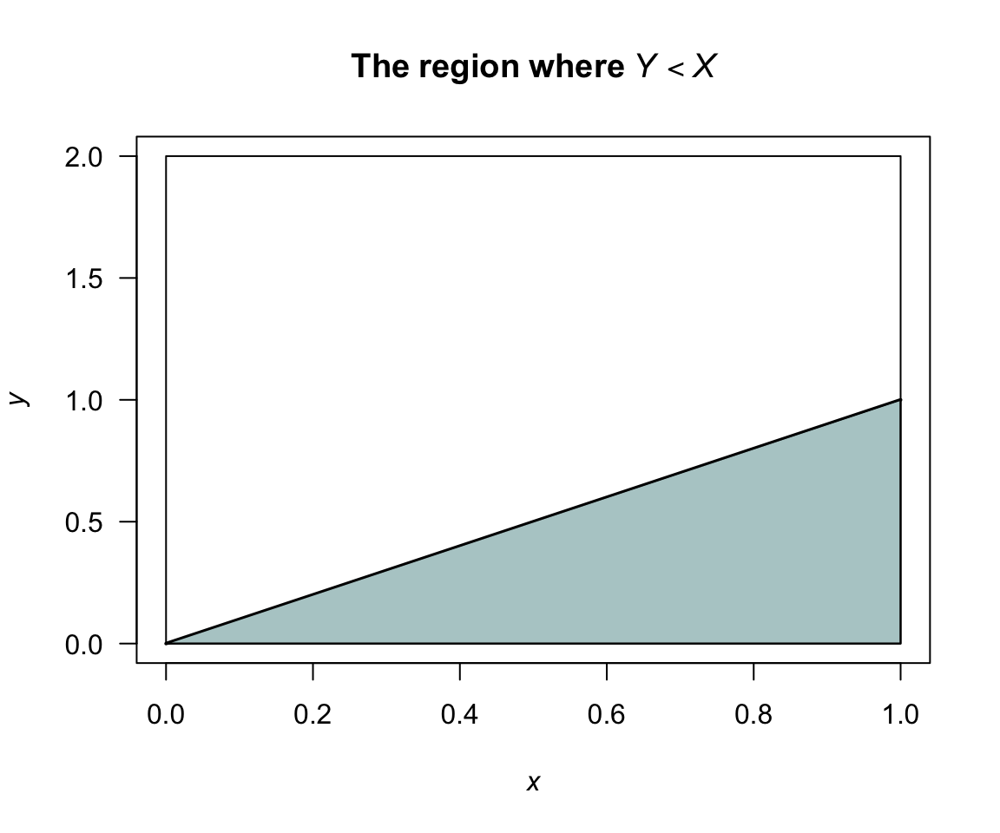
FIGURE 10.3: The region where \(Y < X\).
Example 10.8 (Bivariate discrete marginal distributions) Recall Example 10.5, where two dice are rolled. We can find the marginal distributions of \(X\) and \(Y\) (Table 10.4). The probabilities in the first row (where \(Y = 0\)), for instance, are summed and appear as the first term in the final column; this is the marginal distribution for \(Y = 0\). Similarly for the other rows.
Recalling that \(X\) is the number of times a  is rolled when two dice are thrown, the distribution of \(X\) should be \(\text{Bin}(2, 1/6\)); the probabilities given in the last row of the table agree with this.
That is,
\[
p_X(x) = \binom{2}{x}\left(\frac{1}{6}\right)^x \left(\frac{5}{6}\right)^{2 - x}
\]
for \(x = 0, 1, 2\).
Of course, the distribution of \(Y\) is the same since each die shows a
is rolled when two dice are thrown, the distribution of \(X\) should be \(\text{Bin}(2, 1/6\)); the probabilities given in the last row of the table agree with this.
That is,
\[
p_X(x) = \binom{2}{x}\left(\frac{1}{6}\right)^x \left(\frac{5}{6}\right)^{2 - x}
\]
for \(x = 0, 1, 2\).
Of course, the distribution of \(Y\) is the same since each die shows a  with the same probability \(1/6\) as a
with the same probability \(1/6\) as a  .
.
| \(x = 0\) | \(x = 1\) | \(x = 2\) | \(\Pr(Y = y)\) | |
|---|---|---|---|---|
| \(y = 0\) | \(4/9\) | \(2/9\) | \(1/36\) | \(25/36\) |
| \(y = 1\) | \(2/9\) | \(1/18\) | \(0\) | \(10/36\) |
| \(y = 2\) | \(1/36\) | \(0\) | \(0\) | \(1/36\) |
| \(\Pr(X = x)\) | \(25/36\) | \(10/36\) | \(1/36\) | \(1\) |
Example 10.9 (Bivariate discrete marginal distributions) Consider again the random process in Example 10.15. From Table 10.2, the marginal distribution for \(X\) is found simply by summing over the values for \(Y\) in the table. When \(x = 0\), \[ p_{X}(0) = \sum_{y=1}^6 p_{X, Y}(0, y) = 6 \times \frac{1}{24} = \frac{6}{24} = \frac{1}{4}. \] Likewise, \[\begin{align*} p_{X}(1) &= \sum_{y} p_{X, Y}(1, y) = 6/12;\\ p_{X}(2) &= \sum_{y} p_{X, Y}(2, y) = 6/24. \end{align*}\] So the marginal distribution of \(X\) is \[ p_{X}(x) = \begin{cases} 1/4 & \text{if $x = 0$};\\ 1/2 & \text{if $x = 1$};\\ 1/4 & \text{if $x = 2$}. \end{cases} \] In this example, the marginal distribution is easily found from the total column of Table 10.2.
10.4 Conditional distributions
Consider \((X, Y)\) with joint probability function as in Example 10.2, with marginal distributions of \(X\) and \(Y\) as shown in Table 10.5.
| \(x = 0\) | \(x = 1\) | \(x = 2\) | \(\Pr(Y = y)\) | |
|---|---|---|---|---|
| \(y = 0\) | \(6/47\) | \(12/47\) | \(18/47\) | \(36/47\) |
| \(y = 1\) | \(3/47\) | \(6/47\) | \(0\) | \(9/47\) |
| \(y = 2\) | \(2/47\) | \(0\) | \(0\) | \(2/47\) |
| \(\Pr(X = x)\) | \(11/47\) | \(18/47\) | \(18/47\) | \(1\) |
Suppose we want to evaluate the conditional probability \(\Pr(X = 1 \mid Y = 1)\). We use that \(\Pr(A \mid B) = \Pr(A \cap B)/\Pr(B)\). So \[ \Pr(X = 1 \mid Y = 1) = \frac{\Pr(X = 1, Y = 1)}{\Pr(Y = 1)} = \frac{6/47}{9/47} = \frac{2}{3}. \] So, for each \(x\in \mathcal{R}_X\) we could find \(\Pr(X = x, Y = 1)\) and this is then the conditional distribution of \(X\) given that \(Y = 1\).
Definition 10.6 (Bivariate discrete conditional distributions) For a discrete random vector \((X, Y)\) with probability function \(p_{X, Y}(x, y)\) the conditional probability distribution of \(X\) given \(Y = y\) is defined by \[\begin{align*} p_{X \mid Y=y}(x) &= \Pr(X = x \mid Y = y)\\ &= \frac{\Pr(X = x, Y = y)}{\Pr(Y = y)}\\ &= \frac{p_{X, Y}(x, y)}{p_Y(y)} \end{align*}\] for \(x \in \mathcal{R}_X\) and provided \(p_Y(y) > 0\).
The continuous case is analogous.
Definition 10.7 (Bivariate continuous conditional distributions) If \((X, Y)\) is a continuous \(2\)-dimensional random variable with joint PDF \(f_{X, Y}(x, y)\) and respective marginal probability density functions \(f_X(x)\), \(f_Y(y)\), then the conditional probability distribution of \(X\) given \(Y = y\) is defined by \[ f_{X \mid Y=y}(x) = \frac{f_{X, Y}(x, y)}{f_Y(y)} \] for \(x \in \mathcal{R}_X\) and provided \(f_Y(y) > 0\).
The above conditional probability density functions satisfy the requirements for a univariate PDF; that is, \(f_{X \mid Y=y}(x) \ge 0\) for all \(x\) and \(\int_{\mathcal{R}_X} f_{X\mid Y=y}(x)\,dx = 1\).
Example 10.10 (Bivariate continuous conditional distributions) The joint PDF from Example 10.7 is \[ f_{X,Y}(x,y) = \frac{1}{3}(3x^2 + xy) \quad \text{for $0 \leq x \leq 1$ and $0 \leq y \leq 2$}. \] The marginal probability density functions of \(X\) and \(Y\) are \[\begin{align*} f_X(x) &= 2x^2 + \frac{2}{3}x \quad\text{for $0 \leq x \leq 1$}; \\ f_Y(y) &= \frac{1}{6}(2 + y) \quad \text{for $0 \leq y \leq 2$}. \end{align*}\] Hence, the conditional distribution of \(X \mid Y = y\) is \[ f_{X\mid Y=y}(x) = \frac{(3x^2 + xy)/3}{(2 + y)/6} = \frac{2x(3x + y)}{2 + y} \quad\text{for $0 \leq x \leq 1$}, \] and the conditional distribution of \(Y \mid X = x\) is \[ f_{Y \mid X=x}(y) = \frac{3x + y}{2(3x + 1)}\quad\text{for $0 \leq y \leq 2$}. \] Both these conditional density functions are valid density functions (verify!).
The marginal distribution for \(Y\), and two conditional distributions of \(Y\) (given \(X = 0.1\) and \(X = 0.9\)) are shown in Fig. 10.4.
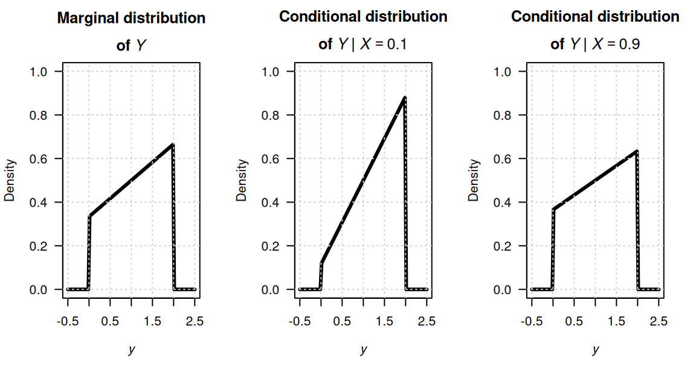
FIGURE 10.4: The marginal distribution of \(Y\) (left panel), and the conditional distribution of \(Y\) for \(X = 0.1\) (centre panel) and \(X = 0.9\) (right panel).
To interpret the conditional distribution, for example \(f_{X \mid Y = y}(x)\), consider slicing through the surface \(f_{X, Y}(x, y)\) with the plane \(y = 0.5\) say (as shown in Fig. 10.5). The intersection of the plane with the surface is proportional to a \(1\)-dimensional PDF. This is \(f_{X, Y}(x, c)\), which will not, in general, be a density function since the area under this curve will be \(f_Y(c)\). Dividing by the constant \(f_Y(c)\) ensures the area under \(\displaystyle\frac{f_{X,Y}(x,c)}{f_Y(c)}\) is one. This is a one-dimensional PDF, of \(X\) given \(Y = c\); that is \(f_{X \mid Y = c}(x)\).
FIGURE 10.5: Joint PDF.
Example 10.11 (Bivariate discrete conditional distributions) Consider again the joint distribution in Example 10.2, with marginal distributions shown in Table 10.5. The conditional distribution of \(X\) given \(Y = 0\) is \[ p_{X\mid Y=0}(x) = \frac{p_{X,Y}(x,0)}{p_Y(0)} = \frac{p_{X,Y}(x,0)}{36/47} \] giving \(p_{X\mid Y=0}(0) = 6/36\), \(p_{X\mid Y=0}(1) = 12/36 = 1/3\), \(p_{X\mid Y=0}(2) = 18/36 = 1/2\).
Example 10.12 (Bivariate discrete conditional distributions) Consider again the random process in Example 10.4. The conditional distribution of \(Y\) given \(X = 0\) is \[\begin{align*} p_{Y\mid X=0}(y) &= \frac{p_{X, Y}(0, y)}{p_{X}(0)} = \frac{p_{X, Y}(0, y)}{1/4} = \frac{1}{6}\quad\text{for $y = 1, 2, 3, 4, 5, 6$}. \end{align*}\] Since \(Y\) is the number on the top face of the die, this result is exactly as expected—knowing the number of heads on the coins tells us nothing about the die.
10.5 Joint density–mass function
When one variable is discrete and the other is continuous, the joint probability function combines a PMF and a PDF into a joint density–mass function. As shown in Sect. 10.2, the total probability is one via a hybrid sum–integral. Using conditional distributions (Sect. 10.4), the joint function can be factored into a marginal probability and a conditional density.
Example 10.13 (Insurance claims) Suppose an insurance company records two variables for each policy-holder.
- \(X \in \{0, 1\}\) indicates whether a claim is made during the year: \(X = 1\) means a claim is made (with probability \(p = 0.30\)), and \(X = 0\) means no claim is made (with probability \(1 - p = 0.70\)).
- \(Y > 0\) is the age of the policy-holder in years, which is recorded for all policy-holders.
Since \(X\) is discrete and \(Y\) is continuous, the joint probability function cannot be written as a single PMF or PDF. Instead, the joint behaviour can be described separately for each value of \(X\). For each value \(x \in \{0, 1\}\), the joint density–mass function is the product of the probability of \(X = x\) and the conditional density of \(Y\) given \(X = x\). Suppose the conditional density of age given no claim (\(X = 0\)) is (see Fig. 10.6) \[ f_{Y\mid X = 0}(y) = \frac{12(y - 20)^2(80 - y)}{60^4}\quad\text{for $20 < y < 80$}. \] and given a claim (\(X = 1\)) is \[ f_{Y\mid X = 1}(y) = \frac{12(y - 20)(80 - y)^2}{60^4}\quad\text{for $20 < y < 80$} \] where both are valid probability density functions on \(y > 0\). The total probability is then \[\begin{align*} &\sum_{x = 0}^{1} \Pr(X = x) \int_0^\infty f_{Y\mid X=x}(y)\,dy\\ &= \Pr(X = 0) \int_0^\infty f_{Y\mid X=0}(y)\,dy + \Pr(X = 1) \int_0^\infty f_{Y\mid X=1}(y)\,dy\\ &= (0.70 \times 1) + (0.30 \times 1) = 1 \end{align*}\] as required.
Older policy-holders tend to drive more carefully, so the conditional distribution of age differs between claimants and non-claimants: \(f_{Y\mid X=1}(y)\) is shifted toward younger ages relative to \(f_{Y\mid X=0}(y)\). This dependence between \(X\) and \(Y\) is the key feature of the joint distribution. Note that \(Y\) is observed for all policy-holders regardless of whether a claim is made; this is what makes \((X, Y)\) a genuine bivariate random variable, rather than simply a mixed univariate distribution.
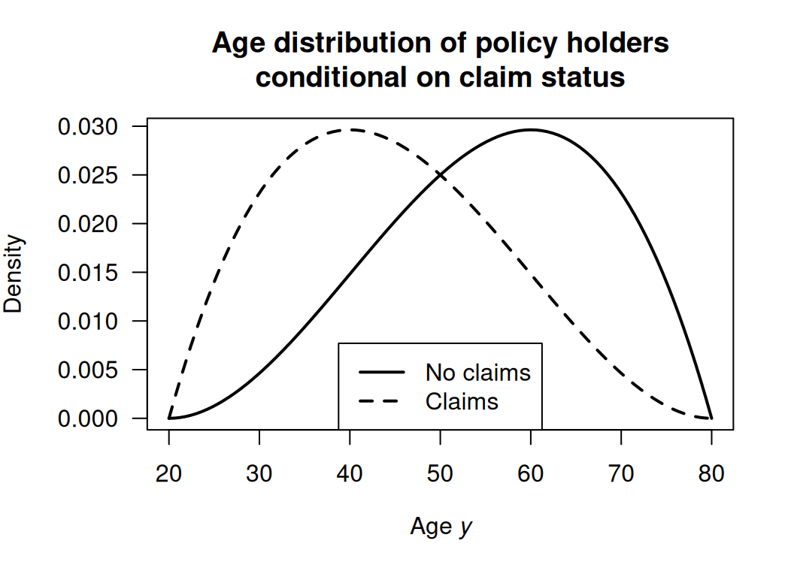
FIGURE 10.6: The two conditional distributions that, when combined, constitute the joint density–mass function.
Definition 10.8 (Mixed bivariate probability function) Let \((X, Y)\) be a random vector where \(X\) is continuous with range \(S_X \subseteq \mathbb{R}\), and \(Y\) is discrete with range \(S_Y = \{y_1, y_2, \dots\}\). A function \(f_{X,Y}(x, y_j)\) defined on \(\mathcal{R}_{X,Y} = S_X \times S_Y\) is a joint density–mass function of \((X, Y)\) if:
- \(f_{X,Y}(x, y_j) \geq 0\) for all \((x, y_j) \in \mathcal{R}_{X,Y}\), and
- \(\displaystyle\sum_{j} \int_{S_X} f_{X,Y}(x, y_j)\, dx = 1\).
In practice \(f_{X,Y}\) is constructed via the multiplication rule: \[ f_{X,Y}(x, y_j) = f_{X \mid Y=y_j}(x) \cdot p_Y(y_j) \] which automatically satisfies both conditions above.
The probability of any event \(A \subseteq S_X\) and \(y_j \in S_Y\) is \[ \Pr(X \in A, Y = y_j) = \int_A f_{X,Y}(x, y_j)\, dx. \]
Example 10.14 (Mixed random variable) Suppose a random vector \((X, Y)\) is defined so that \(Y \in \{1, 2\}\) with \[ p_Y(1) = 0.4, \quad p_Y(2) = 0.6. \] Conditional on \(Y = 1\), the probability density function of \(X\) is \[ f_{X \mid Y = 1}(x) = 1 \qquad\text{for $0 \le x \le 1$}. \] and conditional on \(Y = 2\), the probability density function of \(X\) is \[ f_{X \mid Y = 2}(x) = 1/2\qquad\text{$0 \le x \le 2$}. \] Then the joint density–mass function is \[ f_{X, Y}(x, y) = f_{X \mid Y=y}(x) \cdot p_Y(y) \] or, more explicitly: \[ f_{X,Y}(x, 1) = 0.4 \qquad\text{(for $0 \le x \le 1$)} \qquad \text{and} \qquad f_{X,Y}(x, 2) = 0.3 \qquad\text{(for $0 \le x \le 2$)}. \] Notice that \[ \sum_{y \in \{1,2\}} \int_{-\infty}^{\infty} f_{X,Y}(x,y)\, dx = \int_0^1 0.4 \, dx + \int_0^2 0.3 \, dx = 0.4 + 0.6 = 1 \] as required.
Then, for instance, we can find \(\Pr(X \le 0.5, Y = 2)\): \[ \Pr(X \le 0.5, Y = 2) = \int_0^{0.5} f_{X, Y}(x, 2)\, dx = \int_0^{0.5} 0.3\, dx = 0.15. \]
The marginal distribution of \(X\) is \[ f_X(x) = \sum_j f_{X, Y} (x, y) = \begin{cases} 0.7 & \text{for $0 \le x \le 1$} \\ 0.3 & \text{for $1 < x \le 2$.} \end{cases} \]
10.6 Joint distribution function
The (cumulative) distribution function represents a sum of probabilities, or a volume under a surface, is denoted by \(F_{X, Y}(x, y)\), and defined as follows.
Definition 10.9 (Bivariate distribution function) The bivariate distribution function is \[\begin{align} F_{X, Y}(x, y) &= \sum_{x_i \le x} \sum_{y_j\le y} p_{X, Y}(x_i, y_j) & \text{for $(X,Y)$ discrete;} \tag{10.3}\\ F_{X, Y}(x, y) &= \iint_{(u, v)\in \mathcal{R}_{\{X\times Y}: u\le x, v\le y\}} f_{X, Y}(u,v) \, du \, dv & \text{for $(X,Y)$ continuous.} \tag{10.4} \end{align}\]
Example 10.15 (Bivariate discrete) Consider the random process in Example 10.4, where two coins are tossed, and one die is rolled (simultaneously). The probability function is given in Table 10.2.
The complete joint distribution function is given in Table 10.6, and complicated even for this simple case. As an example, the joint df at \((1, 2)\) would be computed as follows: \[\begin{align*} F_{X, Y}(1, 2) &= \displaystyle \sum_{x\le1} \, \sum_{y\le 2} p_{X, Y}(x, y)\\ &= p_{X, Y}(0, 1) + p_{X, Y}(0, 2) + p_{X, Y}(1, 1) + p_{X, Y}(1, 2) \\ &= 1/24 + 1/24 + 1/12 + 1/12 = 6/24. \end{align*}\]
| \(y \lt 1\) | \(y \le 1\) | \(y \le 2\) | \(y \le 3\) | \(y \le 4\) | \(y \le 5\) | \(y \le 6\) | |
|---|---|---|---|---|---|---|---|
| \(x\lt 0\) | 0 | 0 | 0 | 0 | 0 | 0 | 0 |
| \(x\le 0\) | 0 | \(1/24\) | \(2/24\) | \(3/24\) | \(4/24\) | \(5/24\) | \(6/24\) |
| \(x\le 1\) | 0 | \(3/24\) | \(6/24\) | \(9/24\) | \(12/24\) | \(15/24\) | \(18/24\) |
| \(x\le 2\) | 0 | \(4/24\) | \(8/24\) | \(12/24\) | \(16/24\) | \(20/24\) | \(24/24\) |
Example 10.16 (Bivariate continuous) From Example 10.6, \[\begin{align*} F_{X, Y}(x, y) &= \frac{6}{5} \int_0^{x} \int_0^{y} (t_1 + t_2^2)\, dt_2\, dt_1 \\ &= \frac{6}{5} \int_0^{x} \left[(t_1 t_2 + t_2^3/3)\right]_{t_2 = 0}^{t_2 = y} \, dt_1 \\ &= \frac{6}{5} \int_0^{x} (t_1 y + y^3/3)\, dt_1 \\ &= \frac{6}{5} \left( \frac{x^2 y}{2} + \frac{x y^3}{3}\right) \end{align*}\] for \(0 < x < 1\) and \(0 < y < 1\). So \[ F_{X, Y}(x, y) = \begin{cases} 0 & \text{if $x < 0$ or $y < 0$};\\ \frac{6}{5} \left( x^2 y/2 + x y^3/3\right) & \text{if $0 \le x \le 1$ and $0 \le y \le 1$};\\ 1 & \text{if $x > 1$ and $y > 1$}. \end{cases} \]
10.7 Independent random variables
Recall that events \(A\) and \(B\) are independent if, and only if, \[ \Pr(A \cap B) = \Pr(A)\Pr(B). \] An analogous definition applies for random variables.
Definition 10.10 (Independent random variables) The random variables \(X\) and \(Y\) with joint distribution function \(F_{X, Y}\) and marginal distribution functions \(F_X\) and \(F_Y\) are independent if, and only if, \[\begin{equation} F_{X, Y}(x, y) = F_X(x) \times F_Y(y) \end{equation}\] for all \(x\) and \(y\).
If \(X\) and \(Y\) are not independent they are dependent, or not independent.
The following theorem is often used to establish independence or dependence of random variables. The proof is omitted.
Theorem 10.1 The discrete random variables \(X\) and \(Y\) with joint probability function \(p_{X, Y}(x, y)\) and marginal distributions \(p_X(x)\) and \(p_Y(y)\) are independent if, and only if, \[\begin{equation} p_{X, Y}(x, y) = p_X(x) \times p_Y(y) \text{ for every }(x, y) \in \mathcal{R}_{X \times Y}. \tag{10.5} \end{equation}\] The continuous random variables \((X, Y)\) with joint PDF \(f_{X, Y}\) and marginal PDFs \(f_X\) and \(f_Y\) are independent if, and only if, \[\begin{equation} f_{X, Y}(x, y) = f_X(x)\times f_Y(y) \end{equation}\] for all \((x, y)\in \mathcal{R}_{X\times Y}\).
To show independence for continuous random variables (and analogously for discrete random variables) we must show \(f_{X, Y}(x, y) = f_X(x)\times f_Y(y)\) for all pairs \((x, y)\). If \(f_{X, Y}(x, y)\neq f_X(x)\times f_Y(y)\), even for any one particular pair of \((x, y)\), then \(X\) and \(Y\) are dependent.
Example 10.17 (Bivariate discrete: Independence) The random variables \(X\) and \(Y\) have the joint probability distribution shown in Table 10.7. Summing across rows, the marginal probability function of \(Y\) is: \[ p_Y(y) = \begin{cases} 1/6 & \text{for $y = 1$};\\ 1/3 & \text{for $y = 2$};\\ 1/2 & \text{for $y = 3$}. \end{cases} \] To determine if \(X\) and \(Y\) are independent, the marginal probability function of \(X\) is also needed: \[ p_X(x) = \begin{cases} 1/5 & \text{for $x = 1$};\\ 1/5 & \text{for $x = 2$};\\ 2/5 & \text{for $x = 3$};\\ 1/5 & \text{for $x = 4$}. \end{cases} \] Clearly, Eq. (10.5) is satisfied for all pairs \((x, y)\), so \(X\) and \(Y\) are independent.
| \(x = 1\) | \(x = 2\) | \(x = 3\) | \(x = 4\) | |
|---|---|---|---|---|
| \(y = 1\) | \(1/30\) | \(1/30\) | \(2/30\) | \(1/30\) |
| \(y = 2\) | \(2/30\) | \(2/30\) | \(4/30\) | \(2/30\) |
| \(y = 3\) | \(3/30\) | \(3/30\) | \(6/30\) | \(3/30\) |
Example 10.18 (Bivariate continuous: independence) Consider the random variables \(X\) and \(Y\) with joint PDF \[ f_{X, Y}(x, y) = 4xy \qquad \text{for $0 < x < 1$ and $0 < y < 1 $}. \] To show that \(X\) and \(Y\) are independent, the marginal distributions of \(X\) and \(Y\) are needed. Now \[ f_X(x) = \int_0^1 4xy \, dy = 2x\quad\text{for $0 < x < 1$}. \] Similarly \(f_Y(y) = 2y\) for \(0 < y < 1\). Thus we have \(f_X(x) \cdot f_Y(y) = f(x,y)\), so \(X\) and \(Y\) are independent.
Example 10.19 (Bivariate discrete: independence) Consider again the random process in Example 10.4. The marginal distribution of \(X\) was found in Example 10.9. The marginal distribution of \(Y\) is \[ p_Y(y) = \sum_{x = 0}^{2} p_{X,Y}(x,y) = \frac{1}{24} + \frac{1}{12} + \frac{1}{24} = \frac{1}{6} \quad \text{for } y = 1, \ldots, 6 \] To determine if \(X\) and \(Y\) are independent, each \(x\) and \(y\) pair must be considered. As an example, we see \[\begin{align*} p_{X}(0) \times p_{Y}(1) = 1/4 \times 1/6 = 1/24 &= p_{X, Y}(0, 1);\\ p_{X}(0) \times p_{Y}(2) = 1/4 \times 1/6 = 1/24 &= p_{X, Y}(0, 2);\\ p_{X}(1) \times p_{Y}(1) = 1/2 \times 1/6 = 1/12 &= p_{X, Y}(1, 1);\\ p_{X}(2) \times p_{Y}(1) = 1/4 \times 1/6 = 1/24 &= p_{X, Y}(2, 1). \end{align*}\] This is true for all pairs, and so \(X\) and \(Y\) are independent random variables. Independence is, however, obvious from the description of the random process (Example 10.1), and is easily seen from Table 10.2.
Example 10.20 (Bivariate continuous: independence) Consider the continuous random variables \(X\) and \(Y\) with joint PDF \[ f_{X, Y}(x, y) = \frac{2}{7}(x + 2y) \qquad \text{for $0 < x < 1$ and $1 < y < 2$}. \] The marginal distribution of \(X\) is \[\begin{align*} f_{X}(x) = \int_1^2 \frac{2}{7}(x + 2y)\,dy\\ = \frac{2}{7}(x + 3) \end{align*}\] for \(0 < x < 1\). Likewise, the marginal distribution of \(Y\) is \[ f_{Y}(y) = \frac{2}{7}\left[(x^2/2 + 2 x y)\right]_{x = 0}^1 = \frac{1}{7}(1 + 4y) \] for \(1 < y < 2\). (Both the marginal distributions must be valid density functions; verify!) Since \[ f_{X}(x) \times f_{Y}(y) = \frac{2}{49}(x + 3)(1 + 4y) \ne f_{X, Y}(x, y), \] the random variables \(X\) and \(Y\) are not independent.
The conditional distribution of \(X\) given \(Y = y\) is \[\begin{align*} f_{X \mid Y = y}(x) &= \frac{ f_{X, Y}(x, y)}{ f_{Y}(y)} \\ &= \frac{ (2/7) (x + 2y)}{ (1/7)(1 + 4y)}\\ &= \frac{ 2 (x + 2y)}{ 1 + 4y} \end{align*}\] for \(0 < x < 1\) and any given value of \(1 < y < 2\). (Again, this conditional density must be a valid probability density function.) So, for example, \[ f_{X \mid Y = 1.5}(x) = \frac{ 2 (x + 2\times 1.5)}{ 1 + (4\times 1.5)} = \frac{2}{7}(x + 3) \] for \(0 < x < 1\). And, \[ f_{X\mid Y = 1}(x) = \frac{ 2 (x + 2\times 1)}{ 1 + (4\times 1)} = \frac{2}{5}(x + 2) \] for \(0 < x < 1\). The distribution of \(X\) depends on the given value of \(Y\), so \(X\) and \(Y\) are not independent.
Example 10.21 (Bivariate continuous: independence) Consider the two continuous random variables \(X\) and \(Y\) with joint probability function \[ f_{X, Y}(x, y) = 2(x + y) \qquad \text{for $0 < x < y < 1$}. \] A diagram of the region \(R\) over which \(X\) and \(Y\) are defined is shown in Fig. 10.7.
When \(X = 0.2\), the range of \(Y\) is \((0.2, 1)\); when \(X = 0.5\), the range of \(Y\) is \((0.5, 1)\). The range of \(Y\) depends on the value of \(X\), which means the support \(\{(x, y) \mid 0 < x < y < 1\}\) is not a rectangle. Thus, \(X\) and \(Y\) cannot be independent.
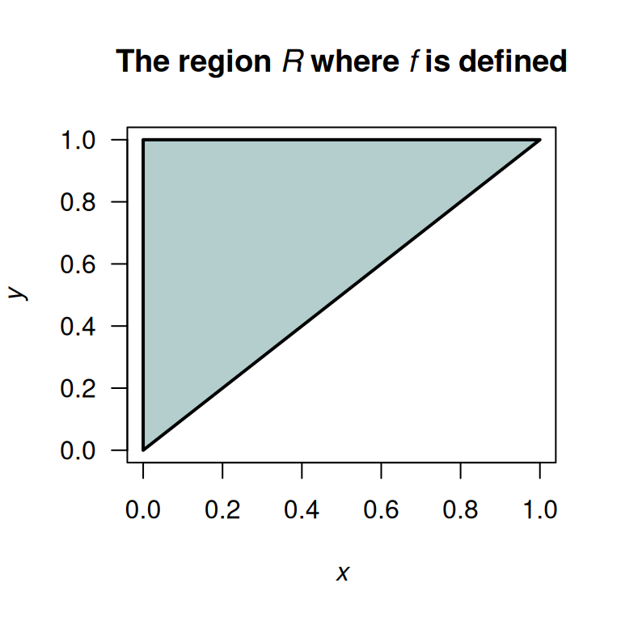
FIGURE 10.7: The region \(R\) over which \(f_{X, Y}(x, y)\) is defined.
Commonly, we need to consider two or more random variables that are independent, and all have the same distribution. These distributions are described as ‘independent and identically distributed’, denoted ‘iid’. We write \(X_1, \ldots, X_n \overset{\text{iid}}{\sim} f(x)\) to mean that \(X_1, \ldots, X_n\) are independent, and each has probability function \(f(x)\).
Example 10.22 (Independent and identically distributed) Suppose the random variables \(X_1\), \(X_2\) and \(X_3\) are independent, and all have the same PDF \[ f_X(x) = 2(1 - x)\quad\text{for $0 < x < 1$}. \] We write \(X_1, X_2, X_3 \overset{\text{iid}}{\sim} f_X(x)\).
10.8 Expected values of a bivariate function
In a manner analogous to the univariate case, the expectation of functions of two random variables can be given.
Definition 10.11 (Expectation for bivariate distributions) Let \((X, Y)\) be a \(2\)-dimensional random variable and let \(u(X, Y)\) be a function of \(X\) and \(Y\).
For a discrete bivariate distribution with probability mass function \(p_{X, Y}(x, y)\) defined over \((x, y) \in R\), the expectation or expected value of \(\operatorname{E}[u(X, Y)]\) is \[ \operatorname{E}[u(X, Y)] = \sum_{(x, y)\in R} u(x, y)\, p_{X, Y}(x, y). \] For a continuous bivariate distribution with probability density function \(f_{X, Y}(x, y)\) defined over \((x, y) \in R\), the expectation or expected value of \(\operatorname{E}[u(X, Y)]\) is \[ \operatorname{E}[u(X, Y)] = \iint_{(x, y)\in R} u(x, y)\, f_{X, Y}(x, y). \]
This definition can be extended to the expectation of a function of any number of random variables.
Example 10.23 (Expectation of function of two rvs (discrete)) Consider the joint distribution of \(X\) and \(Y\) in Example 10.4. Determine \(\operatorname{E}[X + Y]\); i.e., the mean of the number of heads plus the number showing on the die.
From Def. 10.11, write \(u(X, Y) = X + Y\) and so \[\begin{align*} \operatorname{E}[X + Y] &= \sum_{x = 0}^2 \sum_{y = 1}^6 (x + y)\, p_{X, Y}(x, y)\\ &= 1\times(1/24) + 2\times(1/24) + \dots + 6\times(1/24)\\ & \qquad + 2\times(1/12) + 3\times(1/12) + \dots + 7\times(1/12)\\ & \qquad + 3\times(1/24) + 4\times(1/24) + \dots + 8\times(1/24)\\ &= 21/24 + 27/12 + 33/24 = 4.5. \end{align*}\] The answer is just \(\operatorname{E}[X] + \operatorname{E}[Y] = 1 + 3.5 = 4.5\). This is no coincidence, as we see from Theorem 10.2.
Example 10.24 (Expectation of function of two rvs (continuous)) Consider Example 10.6. To determine \(\operatorname{E}[XY]\), write \(u(X, Y) = XY\) and proceed: \[ \operatorname{E}[XY] = \frac{6}{5} \int_0^1\int_0^1 xy(x + y^2)\,dx\,dy = \frac7{20}. \] Unlike the previous example, an alternative simple calculation based on \(\operatorname{E}[X]\) and \(\operatorname{E}[Y]\) is not possible, since \(\operatorname{E}[XY]\neq\operatorname{E}[X] \operatorname{E}[Y]\) in general.
Theorem 10.2 (Expectations of two rvs) If \(X\) and \(Y\) are any random variables, and \(a\) and \(b\) are any constants, then \[ \operatorname{E}[aX + bY] = a\operatorname{E}[X] + b\operatorname{E}[Y]. \]
Proof. The proof given here is for the discrete case. \[\begin{align*} \operatorname{E}[aX + bY] &= \sum_{(x, y) \in R}(ax + by) \, p_{X, Y}(x, y) \quad\text{by definition}\\ &= \sum_x \sum_y ax\, p_{X, Y}(x, y) + \sum_x \sum_y by\, p_{X, Y}(x, y)\\ &= a\sum_x x\sum_y p_{X, Y}(x, y) + b\sum_y y\sum_x p_{X, Y}(x, y)\\ &= a\sum_x x \Pr(X = x) + b\sum_y y \Pr(Y = y)\\ &= a\operatorname{E}[X] + b\operatorname{E}[Y]. \end{align*}\] The continuous case is analogous.
This theorem is no surprise after seeing Theorem 5.2, but is powerful and useful.
This result is true whether or not \(X\) and \(Y\) are independent. Theorem 10.2 naturally generalises to the expected value of a linear combination of random variables (Theorem 11.1).
10.9 Moments of a bivariate distribution: covariance
The idea of a moment in the univariate case naturally extends to the bivariate case. Hence, define \(\mu'_{rs} = \operatorname{E}[X^r Y^s]\) or \(\mu_{rs} = \operatorname{E}\big[(X - \mu_X)^r (Y - \mu_Y)^s\big]\) as the raw and central moments for a bivariate distribution.
The most important of these moments is the covariance.
Definition 10.12 (Covariance) The covariance of \(X\) and \(Y\) is defined as \[ \operatorname{Cov}(X, Y) = \operatorname{E}[(X - \mu_X)(Y - \mu_Y)]. \] When \(X\) and \(Y\) are discrete, \[ \operatorname{Cov}(X, Y) = \sum_{x} \sum_{y} (x - \mu_X)(y - \mu_Y)\, p_{X, Y}(x, y). \] When \(X\) and \(Y\) are continuous, \[ \operatorname{Cov}(X, Y) = \int_{-\infty}^\infty\!\int_{-\infty}^\infty (x - \mu_X)(y - \mu_Y)\, f_{X, Y}(x, y)\, dx\, dy. \]
The covariance is a measure of how \(X\) and \(Y\) vary jointly, in the sense that a positive covariance indicates that ‘on average’ \(X\) and \(Y\) increase (or decrease) together whereas a negative covariance indicates that `on average’ as \(X\) increases and \(Y\) decreases (and vice versa). We say that covariance is a measure of linear dependence.
Covariance is best evaluated from the computational formula.
Theorem 10.3 (Covariance) For any random variables \(X\) and \(Y\), \[ \operatorname{Cov}(X, Y) = \operatorname{E}[XY] - \operatorname{E}[X]\operatorname{E}[Y]. \]
Proof. The proof uses Theorems 5.2 and 10.2. \[\begin{align*} \operatorname{Cov}(X, Y) &= \operatorname{E}\big[ (X - \mu_X)(Y-\mu_Y)\big] \\ &= \operatorname{E}[ XY - \mu_X Y - \mu_Y X + \mu_X\mu_Y] \\ &= \operatorname{E}[ XY ] - \mu_X\operatorname{E}[Y] - \mu_Y\operatorname{E}[X] + \mu_X \mu_Y \\ &= \operatorname{E}[ XY ] - \mu_X\mu_Y - \mu_Y\mu_X + \mu_X \mu_Y \\ &= \operatorname{E}[ XY ] - \mu_X \mu_Y. \end{align*}\]
Computing the covariance is tedious: \(\operatorname{E}[X]\), \(\operatorname{E}[Y]\), \(\operatorname{E}[XY]\) need to be computed, and so the joint and marginal distributions of \(X\) and \(Y\) are needed.
Covariance has units given by the product of the units of \(X\) and \(Y\). For example, if \(X\) is measured in metres and \(Y\) is measured in seconds then \(\operatorname{Cov}(XY)\) has the units metre–seconds. To compare the strength of covariation amongst pairs of random variables, a unitless measure is useful. Correlation does this by scaling the covariance in terms of the standard deviations of the individual variables.
Definition 10.13 (Correlation) The correlation coefficient between the random variables \(X\) and \(Y\) is denoted by \(\text{Corr}(X, Y)\) or \(\rho_{X, Y}\) and is defined as \[ \rho_{X, Y} = \frac{\operatorname{Cov}(X, Y)}{\sqrt{ \operatorname{var}[X]\operatorname{var}[Y]}} = \frac{\sigma_{X, Y}}{\sigma_X \sigma_Y}. \]
If there is no confusion over which random variables are involved, we write \(\rho\) rather than \(\rho_{XY}\). It can be shown that \(-1 \leq \rho \leq 1\).
Example 10.25 (Correlation coefficient (discrete rvs)) Consider two discrete random variables \(X\) and \(Y\) with the joint pf given in Table 10.8. To compute the correlation coefficient, the following steps are required.
- \(\text{Corr}(X, Y) = \operatorname{Cov}(X, Y)/\sqrt{ \operatorname{var}[X]\operatorname{var}[Y]}\), so \(\operatorname{var}[X]\), \(\operatorname{var}[Y]\) must be computed;
- To find \(\operatorname{var}[X]\) and \(\operatorname{var}[Y]\), \(\operatorname{E}[X]\) and \(\operatorname{E}[X^2]\), \(\operatorname{E}[Y]\) and \(\operatorname{E}[Y^2]\) are needed, so the marginal probability functions of \(X\) and \(Y\) are needed.
So first, the marginal pfs are \[ p_X(x) = \sum_{y = -1, 1} p_{X, Y}(x, y) = \begin{cases} 7/24 & \text{for $x = 0$};\\ 8/24 & \text{for $x = 1$};\\ 9/24 & \text{for $x = 2$} \end{cases} \] and \[ p_Y(y) = \sum_{x = 0}^2 p_{X, Y}(x, y) = \begin{cases} 1/2 & \text{for $y = -1$};\\ 1/2 & \text{for $y = 1$}. \end{cases} \] Then, \[\begin{align*} \operatorname{E}[X] &= (7/24 \times 0) + (8/24 \times 1) + (9/24\times 2) = 26/24;\\ \operatorname{E}[X^2] &= (7/24 \times 0^2) + (8/24 \times 1^2) + (9/24\times 2^2) = 44/24;\\ \operatorname{E}[Y] &= (1/2 \times -1) + (1/2 \times 1) = 0;\\ \operatorname{E}[Y^2] &= (1/2 \times (-1)^2) + (1/2 \times 1^2) = 1, \end{align*}\] giving \(\operatorname{var}[X] = 44/24 - (26/24)^2 = 0.6597222\) and \(\operatorname{var}[Y] = 1 - 0^2 = 1\). Then, \[\begin{align*} \operatorname{E}[XY] &= \sum_x\sum_y xy\,p_{X,Y}(x,y) \\ &= (0\times -1 \times 1/8) + (0\times 1 \times 1/6) + \cdots + (2\times 1 \times 1/4) \\ &= 1/12. \end{align*}\] Hence, \[ \operatorname{Cov}(X,Y) = \operatorname{E}[XY] - \operatorname{E}[X] \operatorname{E}[Y] = \frac{1}{12} - \left(\frac{26}{24}\times 0\right) = 1/12, \] and \[ \text{Corr}(X,Y) = \frac{ \operatorname{Cov}(X,Y)}{\sqrt{ \operatorname{var}[X]\operatorname{var}[Y] } } = \frac{1/12}{\sqrt{0.6597222 \times 1}} = 0.1025978, \] so the correlation coefficient is about \(0.10\), and a small positive linear association exists between \(X\) and \(Y\).
| \(x = 0\) | \(x = 1\) | \(x = 2\) | Total | |
|---|---|---|---|---|
| \(y = -1\) | \(1/8\) | \(1/4\) | \(1/8\) | \(1/2\) |
| \(y = +1\) | \(1/6\) | \(1/12\) | \(1/4\) | \(1/2\) |
| Total | \(7/24\) | \(1/3\) | \(3/8\) | \(1\) |
The covariance and correlation have the following properties:
- The correlation has no units.
- The covariance has units; if \(X\) is measured in kilograms and \(Y\) in centimetres, then the units of the covariance are kg-cm.
- If the units of measurements change, the numerical value of the covariance changes, but the numerical value of the correlation stays the same. (For example, if \(X\) is changed from kilograms to grams, the numerical value of the correlation will not change in value, but the numerical values of covariance will change.)
- The correlation is a number between \(-1\) and \(1\) (inclusive). When the correlation coefficient (or covariance) is negative, a negative linear relationship is said to exist between the two variables. Likewise, when the correlation coefficient (or covariance) is positive, a positive linear relationship is said to exist between the two variables.
- When the correlation coefficient (or covariance) is zero, no linear dependence is said to exist.
Theorem 10.4 (Properties of the covariance) For random variables \(X\), \(Y\) and \(Z\), and constants \(a\) and \(b\):
- \(\operatorname{Cov}(X, Y) = \operatorname{Cov}(Y, X)\).
- \(\operatorname{Cov}(aX,bY) = ab\,\operatorname{Cov}(X, Y)\).
- \(\operatorname{var}[aX + bY] = a^2\operatorname{var}[X] + b^2\operatorname{var}[Y] + 2ab\,\operatorname{Cov}(X, Y)\).
- If \(X\) and \(Y\) are independent, then \(\operatorname{E}[XY] = \operatorname{E}[X]\operatorname{E}[Y]\) and hence \(\operatorname{Cov}(X,Y) = 0\).
- \(\operatorname{Cov}(X, Y) = 0\) does not imply \(X\) and \(Y\) are independent, except for the special case of the bivariate normal distribution.
A zero correlation coefficient in an indication of no linear dependence only. A relationship may still exist between \(X\) and \(Y\) even if the correlation is zero.
Example 10.26 (Linear dependence and correlation) Consider the random variable \(X\) with the probability function:
| \(x\) | \(-1\) | \(0\) | \(1\) |
|---|---|---|---|
| \(p_{X}(x)\) | \(1/3\) | \(1/3\) | \(1/3\) |
Then, define \(Y\) to be explicitly related to \(X\): \(Y = X^2\). A relationship definitely exists between \(X\) and \(Y\) (but is non-linear). The joint probability function for \((X, Y)\) is shown in Table 10.9. Then \[\begin{equation*} \operatorname{Cov}(X, Y) = \operatorname{E}[X, Y] - \operatorname{E}[X]\cdot\operatorname{E}[Y] = 0 - 0\times 2/3 = 0 \end{equation*}\] so \(\text{Corr}(X, Y) = 0\). But \(X\) and \(Y\) are related*: \(Y\) is explicitly a function of \(X\).
Since the correlation is a measure of the strength of the linear relationship between two random variables, a correlation of zero simply is indication of no linear relationship between \(X\) and \(Y\). (As in this example, a non-linear relationship may exist between the variables, but no linear relationship.)
| \(x = -1\) | \(x = 0\) | \(x = 1\) | Total | |
|---|---|---|---|---|
| \(y = 0\) | \(0\) | \(1/3\) | \(0\) | \(1/3\) |
| \(y = 1\) | \(1/3\) | \(0\) | \(1/3\) | \(2/3\) |
| Total | \(1/3\) | \(1/3\) | \(1/3\) | \(1\) |
10.10 Conditional expectations
Conditional expectations are expectations computed from a conditional distribution. The conditional mean is the expected value computed from a conditional distribution.
Definition 10.14 (Conditional expectation) The conditional expected value or conditional mean of a random variable \(X\) for given \(Y = y\) is denoted by \(\operatorname{E}[X \mid Y = y]\).
If the conditional distribution is discrete with probability mass function \(p_{X\mid Y=y}(x)\), then \[ \operatorname{E}[X \mid Y = y] = \displaystyle \sum_{x} x \cdot p_{X\mid Y=y}(x). \] If the conditional distribution is continuous with probability density function \(f_{X\mid Y=y}(x)\), then \[ \operatorname{E}[X \mid Y = y] = \int_{-\infty}^\infty x \cdot f_{X\mid Y=y}(x)\, dx. \]
\(\operatorname{E}[X \mid Y = y]\) is often denoted \(\mu_{X \mid Y = y}\).
Example 10.27 (Conditional mean (continuous)) Consider the two random variables \(X\) and \(Y\) with joint PDF \[ f_{X, Y}(x, y) = \frac{3}{5}(x + xy + y^2) \qquad \text{for $0 < x < 1$ and $-1 < y < 1$}. \] To find \(f_{Y \mid X = x}(y)\), first find \(f_X(x)\): \[ f_X(x) = \int_{-1}^1 f_{X,Y}(x,y) dy = \frac{3}{15}(6x + 2)\qquad\text{for $0 < x < 1$}. \]
Then, \[ f_{Y \mid X = x}(y) = \frac{ f_{X, Y}(x, y)}{ f_X(x) } = \frac{3(x + xy + y^2)}{6x + 2} \] for \(-1 < y < 1\) and given \(0 < x < 1\). The expected value of \(Y\) given \(X = x\) is then \[ \operatorname{E}[Y\mid X = x] = \frac{x}{3x + 1} \qquad\text{for $0 < x < 1$}. \] This expression indicates that the conditional expected value of \(Y\) depends on the given value of \(X\); for example, \[\begin{align*} \operatorname{E}[Y\mid X = 0] &= 0;\\ \operatorname{E}[Y\mid X = 0.5] &= 0.2;\\ \operatorname{E}[Y\mid X = 1] &= 1/4. \end{align*}\] Since \(\operatorname{E}[Y\mid X = x]\) depends on the value of \(X\), then \(X\) and \(Y\) are not independent.
The conditional variance is the variance computed from a conditional distribution.
Definition 10.15 (Conditional variance) The conditional variance of a random variable \(X\) for given \(Y = y\) is denoted by \(\operatorname{var}[X \mid Y = y]\).
If the conditional distribution is discrete with probability mass function \(p_{X\mid Y}(x)\), then \[ \operatorname{var}[X \mid Y = y] = \displaystyle \sum_{x} (x - \mu_{X\mid y})^2\, p_{X\mid Y}(x), \] where \(\mu_{X \mid y}\) is the conditional mean of \(X\) given \(Y = y\).
If the conditional distribution is continuous with probability density function \(f_{X\mid Y}(x)\), then \[ \operatorname{var}[X \mid Y = y] = \int_{-\infty}^\infty (x - \mu_{X\mid y})^2\, f_{X\mid Y}(x)\, dx. \] where \(\mu_{X \mid y}\) is the conditional mean of \(X\) given \(Y = y\).
For brevity, \(\operatorname{var}[X \mid Y = y]\) is often denoted \(\sigma^2_{X \mid Y = y}\).
Example 10.28 (Conditional variance (continuous)) Refer to Example 10.27. The conditional variance of \(Y\) given \(X = x\) is found by first computing \(\operatorname{E}[Y^2\mid X = x]\): \[\begin{align*} \operatorname{E}[Y^2\mid X = x] &= \int_{-1}^1 y^2 f_{Y\mid X = x}(y)\,dy \\ &= \frac{3}{6x + 2} \int_{-1}^1 y^2 (x + xy + y^2)\, dy \\ &= \frac{5x + 3}{5(3x + 1)}. \end{align*}\] The conditional variance is \[\begin{align*} \operatorname{var}[Y\mid X = x] &= \operatorname{E}[Y^2\mid X = x] - \left( \operatorname{E}[Y\mid X = x] \right)^2 \\ &= \frac{5x+3}{5(3x + 1)} - \left( \frac{x}{3x + 1}\right)^2 \\ &= \frac{10x^2 + 14x + 3}{5(3x + 1)^2} \end{align*}\] for given \(0 < x < 1\). Hence the variance of \(Y\) depends on the given value of \(X\); for example, \[\begin{align*} \operatorname{var}[Y\mid X = 0] &= 3/5 = 0.6\\ \operatorname{var}[Y\mid X = 0.5] &= \frac{10\times (0.5)^2 + (14\times0.5) + 3}{5(3\times0.5 + 1)^2} = 0.4\\ \operatorname{var}[Y\mid X = 1] &= 27/80 = 0.3375. \end{align*}\]
In general, to compute the conditional variance of \(X\mid Y = y\) given a joint probability function, the following steps are required.
- Find the marginal distribution of \(Y\).
- Use this to compute the conditional probability function \(p_{X \mid Y = y}(x) = p_{X, Y}(x, y)/p_{X}(x)\).
- Find the conditional mean \(\operatorname{E}[X \mid Y = y]\).
- Find the conditional second raw moment \(\operatorname{E}[X^2 \mid Y = y]\).
- Finally, compute \(\operatorname{var}[X\mid Y = y] = \operatorname{E}[X^2\mid Y=y] - (\operatorname{E}[X\mid Y=y])^2\).
Example 10.29 (Conditional variance (discrete)) Two discrete random variables \(U\) and \(V\) have the joint probability function given in Table 10.10. To find the conditional variance of \(V\) given \(U = 11\), use the steps above.
First, find the marginal distribution of \(U\): \[ p_U(u) = \begin{cases} 4/9 & \text{for $u = 10$};\\ 7/18 & \text{for $u = 11$};\\ 1/6 & \text{for $u = 12$}. \end{cases} \] Secondly, compute the conditional probability function: \[\begin{align*} p_{V\mid U = 11}(v \mid u = 11) &= p_{U, V}(u,v)/p_{U}(u = 11) \\ &= \begin{cases} \frac{1/18}{7/18} = 1/7 & \text{if $v = 0$};\\ \frac{1/3}{7/18} = 6/7 & \text{if $v = 1$} \end{cases} \end{align*}\] using \(p_U(u = 11) = 7/18\) from the Step 1.
Thirdly, find the conditional mean: \[ \operatorname{E}[V\mid U = 11] = \sum_v v\, p_{V\mid U=11}(v) = \left(\frac{1}{7}\times 0\right) + \left(\frac{6}{7}\times 1\right) = 6/7. \] Fourthly, find the conditional second raw moment: \[ \operatorname{E}[V^2\mid U] = \sum_v v^2\, p_{V\mid U=11}(v) = \left(\frac{1}{7}\times 0^2\right) + \left(\frac{6}{7}\times 1^2\right) = 6/7. \] Finally, compute: \[\begin{align*} \operatorname{var}[V\mid U = 11] &= \operatorname{E}[V\mid U = 11] - (\operatorname{E}[V\mid U = 11])^2\\ &= (6/7) - (6/7)^2\\ &\approx 0.1224. \end{align*}\]
| \(u = 10\) | \(u = 11\) | \(u = 12\) | Total | |
|---|---|---|---|---|
| \(v = 0\) | \(1/9\) | \(1/18\) | \(1/6\) | \(1/3\) |
| \(v = 1\) | \(1/3\) | \(1/3\) | \(0\) | \(2/3\) |
| Total | \(4/9\) | \(7/18\) | \(1/6\) | \(1\) |
10.11 Laws of total expectation and variance
The conditional expectation leads naturally to an important result: the unconditional mean of \(X\) can be recovered by averaging the conditional mean over all values of \(Y\). Intuitively, the law of total expectation says that the overall mean of \(X\) is a weighted average of the conditional means of \(X\), weighted by the distribution of \(Y\).
Theorem 10.5 (Law of total expectation) For any two random variables \(X\) and \(Y\), \[ \operatorname{E}[X] = \operatorname{E}\big[\operatorname{E}[X \mid Y]\big]. \] For a discrete random variable \(Y\), \[ \operatorname{E}[X] = \sum_y \operatorname{E}[X \mid Y = y]\cdot p_Y(y). \] For a continuous random variable \(Y\), \[ \operatorname{E}[X] = \int_{-\infty}^\infty \operatorname{E}[X \mid Y = y]\cdot f_Y(y)\, dy. \]
Proof. The proof is given for the discrete case. Starting from the definition of conditional expectation: \[\begin{align*} \operatorname{E}\big[\operatorname{E}[X \mid Y]\big] &= \sum_y \operatorname{E}[X \mid Y = y]\cdot p_Y(y)\\ &= \sum_y \left(\sum_x x\cdot p_{X\mid Y}(x)\right) p_Y(y)\\ &= \sum_y \sum_x x\cdot \frac{p_{X,Y}(x, y)}{p_Y(y)} \cdot p_Y(y)\\ &= \sum_x x \sum_y p_{X,Y}(x, y)\\ &= \sum_x x\cdot p_X(x)\\ &= \operatorname{E}[X]. \end{align*}\] The continuous case is analogous, with sums replaced by integrals.
Example 10.30 (Law of total expectation (discrete)) Consider the joint distribution of \(X\) and \(Y\) in Example 10.25, where \(\operatorname{E}[X] = 26/24\). The conditional means are: \[\begin{align*} \operatorname{E}[X \mid Y = -1] &= \sum_x x\cdot p_{X\mid Y= -2}(x) = 0\times\frac{1/8}{1/2} + 1\times\frac{1/4}{1/2} + 2\times\frac{1/8}{1/2} = 1;\\ \operatorname{E}[X \mid Y = +1] &= \sum_x x\cdot p_{X\mid Y=1}(x) = 0\times\frac{1/6}{1/2} + 1\times\frac{1/12}{1/2} + 2\times\frac{1/4}{1/2} = \frac{8}{6}. \end{align*}\] By the law of total expectation: \[ \operatorname{E}[X] = \operatorname{E}[X\mid Y = -1]\cdot p_Y(-1) + \operatorname{E}[X\mid Y = +1]\cdot p_Y(+1) = 1\times\frac{1}{2} + \frac{8}{6}\times\frac{1}{2} = \frac{26}{24}, \] which agrees with the value computed directly from the marginal distribution of \(X\).
Example 10.31 (Law of total expectation) Let \(X = \sum_{i=1}^N Y_i\) where \(N\sim\text{Poisson}(\lambda)\) and \(Y_i\sim\text{Gamma}(\alpha, \beta)\) independently. Conditioning on \(N\), the conditional mean of \(X\) given \(N = n\) is: \[ \operatorname{E}[X\mid N = n] = \sum_{i=1}^n \operatorname{E}[Y_i] = n\alpha\beta. \] By the law of total expectation: \[ \operatorname{E}[X] = \operatorname{E}\big[\operatorname{E}[X\mid N]\big] = \operatorname{E}[N\alpha\beta] = \alpha\beta\operatorname{E}[N] = \lambda\alpha\beta, \] as seen later in Theorem 8.2.
An analogous result holds for the variance.
Theorem 10.6 (Law of total variance) For any two random variables \(X\) and \(Y\), \[ \operatorname{var}[X] = \operatorname{E}\big[\operatorname{var}[X \mid Y]\big] + \operatorname{var}\big[\operatorname{E}[X \mid Y]\big]. \]
Proof. Using the computational formula \(\operatorname{var}[X] = \operatorname{E}[X^2] - \operatorname{E}[X]^2\), and applying the law of total expectation (Theorem 10.5) twice: \[\begin{align*} \operatorname{E}\big[\operatorname{var}[X\mid Y]\big] &= \operatorname{E}\big[\operatorname{E}[X^2\mid Y] - \operatorname{E}[X\mid Y]^2\big]\\ &= \operatorname{E}[X^2] - \operatorname{E}\big[\operatorname{E}[X\mid Y]^2\big]. \end{align*}\] Also, \[ \operatorname{var}\big[\operatorname{E}[X\mid Y]\big] = \operatorname{E}\big[\operatorname{E}[X\mid Y]^2\big] - \operatorname{E}\big[\operatorname{E}[X\mid Y]\big]^2 = \operatorname{E}\big[\operatorname{E}[X\mid Y]^2\big] - \operatorname{E}[X]^2. \] Adding these two expressions: \[ \operatorname{E}\big[\operatorname{var}[X\mid Y]\big] + \operatorname{var}\big[\operatorname{E}[X\mid Y]\big] = \operatorname{E}[X^2] - \operatorname{E}[X]^2 = \operatorname{var}[X]. \]
Example 10.32 (Law of total variance (discrete)) Suppose a fair coin is tossed: if it lands heads (\(Y = 1\), probability \(1/2\)), then \(X \sim \text{Bin}(4, 0.5)\); if it lands tails (\(Y = 0\), probability \(1/2\)), then \(X \sim \text{Bin}(4, 0.9)\).
The conditional means and variances are: \[\begin{align*} \operatorname{E}[X\mid Y = 1] &= 4\times 0.5 = 2, \quad \operatorname{var}[X\mid Y = 1] = 4\times 0.5\times 0.5 = 1;\\ \operatorname{E}[X\mid Y = 0] &= 4\times 0.9 = 3.6, \quad \operatorname{var}[X\mid Y = 0] = 4\times 0.9\times 0.1 = 0.36. \end{align*}\] The overall mean is: \[ \operatorname{E}[X] = 2\times\frac{1}{2} + 3.6\times\frac{1}{2} = 2.8. \] The first term (expected conditional variance): \[ \operatorname{E}\big[\operatorname{var}[X\mid Y]\big] = 1\times\frac{1}{2} + 0.36\times\frac{1}{2} = 0.68. \] The second term (variance of conditional mean): \[ \operatorname{var}\big[\operatorname{E}[X\mid Y]\big] = (2 - 2.8)^2\times\frac{1}{2} + (3.6 - 2.8)^2\times\frac{1}{2} = 0.64. \] By the law of total variance: \[ \operatorname{var}[X] = 0.68 + 0.64 = 1.32. \]
Example 10.33 (Law of total variance) Let \(X = \sum_{i=1}^N Y_i\) where \(N\sim\text{Poisson}(\lambda)\) and \(Y_i\sim\text{Gamma}(\alpha, \beta)\) independently (as in Sect. 8.3).
The conditional mean and variance of \(X\) given \(N = n\) are: \[ \operatorname{E}[X\mid N = n] = n\alpha\beta \quad\text{and}\quad \operatorname{var}[X\mid N = n] = n\alpha\beta^2. \] The first term is \[ \operatorname{E}\big[\operatorname{var}[X\mid N]\big] = \operatorname{E}[N\alpha\beta^2] = \lambda\alpha\beta^2. \] The second term is \[ \operatorname{var}\big[\operatorname{E}[X\mid N]\big] = \operatorname{var}[N\alpha\beta] = \alpha^2\beta^2\operatorname{var}[N] = \lambda\alpha^2\beta^2. \] Then, by the law of total variance \[ \operatorname{var}[X] = \lambda\alpha\beta^2 + \lambda\alpha^2\beta^2 = \lambda\alpha\beta^2(1 + \alpha). \]
10.12 Transformations of bivariate random variables
In the bivariate case, two methods are discussed. The change of variable method (Sect. 10.12.1) can be used for transforming two random variables \((X_1, X_2)\) into two new random variables \((Y_1, Y_2)\). The distribution function method (Sect. 10.12.2) is best used when two random variables \((X_1, X_2)\) are combined into one new random variable (for example, \(Y = X_1 + X_2\)).
10.12.1 Bivariate change of variable method
First consider two discrete random variables \(X_1\) and \(X_2\) with a joint probability mass function \(p_{X_1, X_2}(x_1, x_2)\) defined on the two-dimensional set of points \(R^2_X\) for which \(p(x_1, x_2) > 0\). For two random variables \((X_1, X_2)\) with a joint probability function \(p_{X_1, X_2}(x_1, x_2)\), two transformations are needed to transform \((X_1, X_2)\) into two new random variables \((Y_1, Y_2)\): \[ y_1 = u_1( x_1, x_2)\qquad\text{and}\qquad y_2 = u_2( x_1, x_2). \]
The transformations map \(R^2_X\) onto \(R^2_Y\) (the two-dimensional set of points for which \(p(y_1, y_2) > 0\)). Denote the two inverse functions as \[ x_1 = w_1(y_1, y_2)\qquad\text{and}\qquad x_2 = w_2(y_1, y_2). \] Then the joint probability function of the new (transformed) random variables is \[ p_{Y_1, Y_2}(y_1, y_2) = p_{X_1, X_2}\big( w_1(y_1, y_2), w_2(y_1, y_2)\big) \qquad \text{where $(y_1, y_2)\in R^2_Y$}. \]
Example 10.34 (Transformation discrete (bivariate)) Let the two discrete random variables \(X_1\) and \(X_2\) have the joint probability function in Table 10.11. Define \[ Y_1 = |X_1 + X_2| \qquad\text{and}\qquad Y_2 = X_1 + 1. \] The joint probability function of \((Y_1, Y_2)\) can be found by determining how each \((x_1, x_2)\) pair is transformed into a corresponding \((y_1, y_2)\) pair:
| \(\Pr(x_1, x_2)\) | \((x_1, x_2)\) | \(\mapsto\) | \((y_1, y_2)\) |
|---|---|---|---|
| \(0.3\) | \((-1, 0)\) | \(\mapsto\) | \((1, 1)\) |
| \(0.1\) | \((-1, 1)\) | \(\mapsto\) | \((0, 2)\) |
| \(0.1\) | \((-1, 2)\) | \(\mapsto\) | \((1, 3)\) |
| \(0.2\) | \((1, 0)\) | \(\mapsto\) | \((1, 1)\) |
| \(0.2\) | \((1, 1)\) | \(\mapsto\) | \((2, 2)\) |
| \(0.1\) | \((1, 2)\) | \(\mapsto\) | \((3, 3)\) |
Note that \((-1, 0)\) and \((1, 0)\) both map to \((1, 1)\), so the transformation is not a one-to-one transformation. The joint probability function can then be constructed as shown in Table 10.12.
| \(x_2 = 0\) | \(x_2 = 1\) | \(x_2 = 2\) | |
|---|---|---|---|
| \(x_1 = -1\) | \(0.3\) | \(0.1\) | \(0.1\) |
| \(x_1 = +1\) | \(0.2\) | \(0.2\) | \(0.1\) |
| \(y_1 = 0\) | \(y_1 = 1\) | \(y_1 = 2\) | \(y_1 = 3\) | |
|---|---|---|---|---|
| \(y_2 = 1\) | \(0.0\) | \(0.5\) | \(0.0\) | \(0.0\) |
| \(y_2 = 2\) | \(0.1\) | \(0.0\) | \(0.2\) | \(0.0\) |
| \(y_2 = 3\) | \(0.0\) | \(0.1\) | \(0.0\) | \(0.1\) |
With two continuous random variables \((X_1, X_2)\) with a joint probability density function \(f_{X_1, X_2}(x_1, x_2)\), the joint probability density function of the new variables is \[ f_{Y_1, Y_2}(y_1, y_2) = f_{X_1, X_2}(x_1, x_2) \cdot |\det J| \] where \[ |\det J| = \frac{\partial x_1}{\partial y_1} \frac{\partial x_2}{\partial y_2} - \frac{\partial x_1}{\partial y_2} \frac{\partial x_2}{\partial y_1}. \] This expression plays an equivalent role to \(\left|dx/dy\right|\) in the univariate case.
For readers with knowledge of matrix algebra, \(|\det J|\) is the absolute value of the determinant of the Jacobian: \[ J = \begin{bmatrix} {\partial x_1}/{\partial y_1} & {\partial x_1}/{\partial y_2} \\[6pt] {\partial x_2}/{\partial y_1} & {\partial x_2}/{\partial y_2} \end{bmatrix}. \]
Example 10.35 (Change of variable: bivariate continuous rvs) Consider the joint probability density function \[ f_{X_1, X_2}(x_1, x_2) = \frac{1}{2}x_1\, x_2 \quad\text{for $0 < x_1 < 1$ and $0 < x_2 < 2$}, \] and the transformations \[ Y_1 = X_1 + X_2\quad\text{and}\quad Y_2 = X_1 - X_2. \] The inverse transformations are \[ X_1 = \frac{Y_1 + Y_2}{2} \quad\text{and}\quad X_2 = \frac{Y_1 - Y_2}{2}, \] so that \[ \operatorname{det} J = \left(\frac{1}{2}\times\frac{-1}{2}\right) - \left(\frac{1}{2}\times\frac{1}{2}\right) = -1/2. \] Finding the support in the \((y_1, y_2)\)-plane takes care; see Fig. 10.8. Even though the transformations are linear, the rectangular support in the \((x_2, x_2)\)-plane is a parallelogram in the \((y_1, y_2)\)-plane.
The joint distribution of \((Y_1, Y_2)\) is then \[\begin{align*} f_{Y_1, Y_2}(y_1, y_2) &= \frac{1}{2} \cdot \frac{y_1 + y_2}{2}\cdot\frac{y_1 - y_2}{2} \cdot \left|-\frac{1}{2}\right|\\ &= \frac{y_1^2 - y_2^2}{16} \quad \text{for $0 < y_1 + y_2 < 2$ and $0 < y_1 - y_2 < 4$}. \end{align*}\]
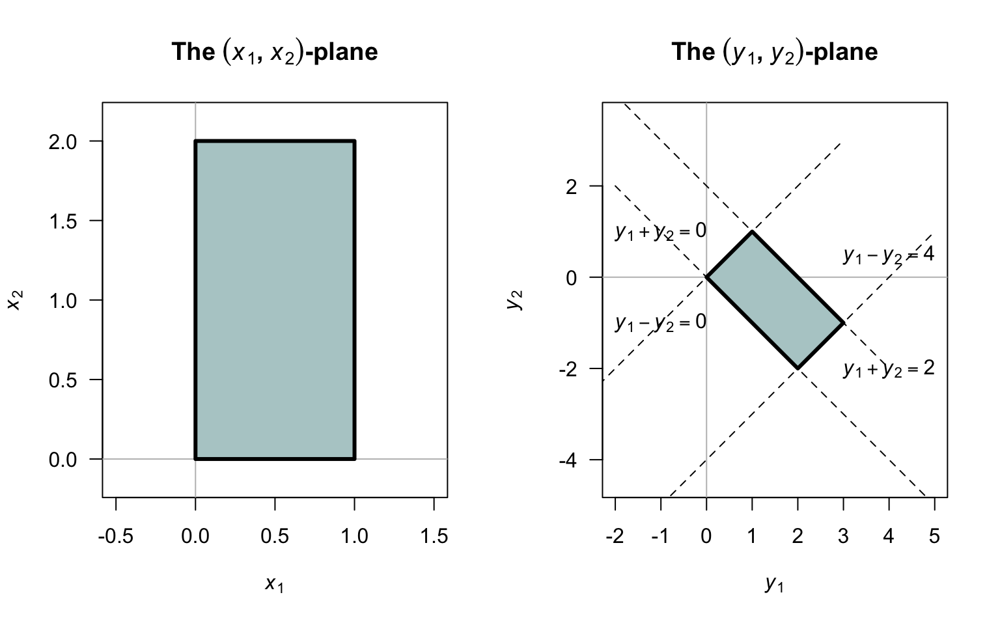
FIGURE 10.8: The orginal support in the \((x_1, x_2)\)-plane (left), and the support for the transformed variables in the \((y_1, y_2)\)-plane (right).
Sometimes, a joint probability function of two random variables is given, but only one new random variable is required. In this case, a second (dummy) transformation is used, usually a very simple transformation.
Example 10.36 (Transformation (bivariate)) Consider the joint probability density function \[ f_{X_1, X_2}(x_1, x_2) = x_1 - x_2 + 1\quad\text{for $1 < x_1 < 2$ and $1 < x_2 < 2$}. \] We are interested in the probability density function of \(Y_1 = X_2 - X_2\).
Define a simple second (dummy) transformation; say, \(Y_2 = X_2\) Then the inverse functions are \[ X_1 = Y_1 + Y_2\quad\text{and}\quad X_2 = Y_2, \] corresponding to the region in the \((y_1, y_2)\) as shown in Fig. 10.9 (left panel).
Then, \(|\operatorname{det} J| = 1\) and so \[ f_{Y_1, Y_2}(y_1, y_2) = (y_1 + y_2) - y_2 + 1 = y_1 + 1\quad\text{for $-y_2 < y_1 < 1 - y_2$ and $0 < y_2 < 1$} \] This is a joint density function; the required probability density function for only \(Y_1\) is \[\begin{align*} f_{Y_1}(y_1) &= \int f_{Y_1, Y_2}(y_1, y_2), dy_2 = \int_{-y_1}^1 y_1 + 1\,dy + \int_{0}^{1 - y_1} y_1 + 1\,dy\\ &= \begin{cases} (1 + y_1)^2 & \text{for $-1 < y_1 < 0$}\\ 1 - y_1^2 & \text{for $0 < y_1 < 1$}. \end{cases} \end{align*}\]
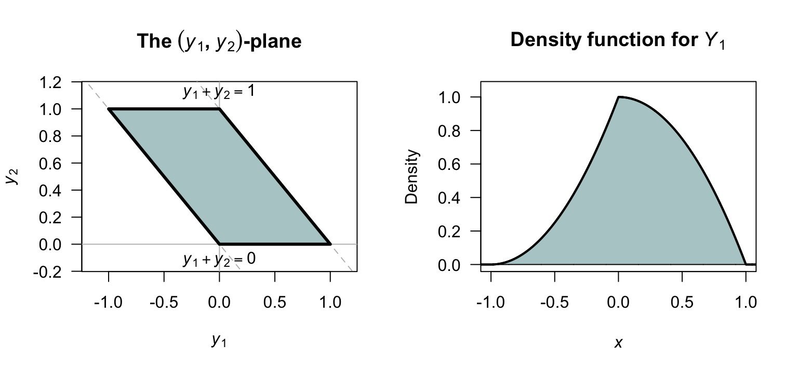
FIGURE 10.9: The support in the \((y_1, y_2)\)-plane (left), and the marginal distribution of \(Y_1\) (right).
10.12.2 Bivariate distribution function method
The distribution function method is most useful for finding the distribution of the marginal distribution of a single transformed random variable that depends on two (or more) other random variables. Generally, this is simpler than the approach used in Example 10.36 which first requires finding the joint probability function. Consequently, only one transformation is considered: \(Y = u(X_1, X_2)\).
For the discrete case, let \((X_1, X_2)\) have joint probability mass function \(p_{X_1, X_2}(x_1, x_2)\). For \(Y = u(X_1, X_2)\), the CDF of \(Y\) is \[ F_Y(y) = \Pr(Y \leq y) = \sum_{\{(x_1,x_2):\, g(x_1,x_2) \leq y\}} p_{X_1, X_2}(x_1, x_2), \] and the PMF is recovered (see Equation (4.1)) as \[ p_Y(y) = F_Y(y) - F_Y(y^-) \] where \(y^-\) denotes the largest value in the support of \(Y\) strictly less than \(y\).
The bivariate discrete CDF method is often the most natural approach when \(u(\cdot)\) is a many-to-one function (such as a maximum or minimum), where enumerating pre-images directly would be cumbersome, but the event \(\{u(X_1, X_2) \leq y\}\) has a simple geometric or combinatorial description.
Example 10.37 (Maximum of two independent binomial distributions) Let \(X_1 \sim \text{Binomial}(n_1, p)\) and \(X_2 \sim \text{Binomial}(n_2, p)\) independently. Thus, \(x_1\in \{0, 1, \dots, n_1\}\) and \(x_2\in\{0, 1, \dots, n_2\}\).
Define \(M = \max(X_1, X_2)\); then \(m \in \{0, 1, \ldots, \max(n_1, n_2)\}\).
The distribution function for \(M\) is \[\begin{equation} F_M(m) = \Pr(X_1 \leq m\text{\ and\ } X_2 \leq m) = F_{X_1}(m) \cdot F_{X_2}(m) \tag{10.6} \end{equation}\] since \(X_1\) and \(X_2\) are independent.
The probability mass function for \(M\) then is found using \(p_M(m) = F_M(m) - F_M(m - 1)\). Substituting Equation (10.6) twice into this expression gives \[\begin{alignat*}{2} p_M(m) &= F_M(m) & {} - {} & F_M(m - 1)\\ &= F_{X_1}(m) \cdot F_{X_2}(m) & {} - {} & F_{X_1}(m - 1) \cdot F_{X_2}(m - 1). \end{alignat*}\]
This expression does not simplify to a standard distribution in general. Two examples of the probability mass function are shown in Fig. 10.10.
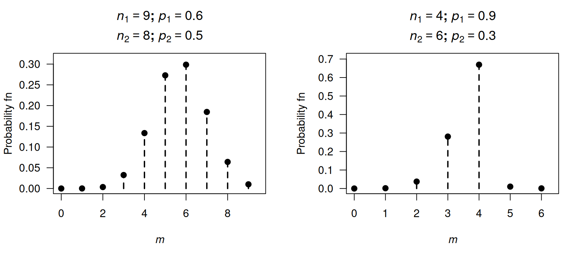
FIGURE 10.10: A bivariate transformation: the maximum of two independent binomial distributions: two examples.
For two random continuous variables \(X_1\) and \(X_2\) with a joint probability density function \(f_{X_1, X_2}(x_1, x_2)\) defined on the two-dimensional set of points \(R^2_X\), the distribution of \(Y = u(X_1, X_2)\), find \[ F_Y(y) = \Pr(u(X_1, X_2) \leq y) = \iint_{\{(x_1,x_2):\, u(x_1,x_2) \leq y\}} f_{X_1, X_2}(x_1, x_2)\, dx_1\, dx_2; \] then differentiate: \(f_Y(y) = F_Y'(y)\). Characterising the region of integration \(\{u(x_1,x_2) \leq y\}\) carefully as a function of \(y\) is important, and a common source of difficulty; sketching the support is strongly recommended.
Example 10.38 (Distribution of $M = \max(X_1, X_2)$ for independent uniforms distributions) Let \(X_1, X_2 \overset{\text{iid}}{\sim} \text{Uniform}(0,1)\) with joint PDF \(f_{X_1, X_2}(x_1, x_2) = 1\) on the unit square (Fig. 10.11, left panel). Define \(M = \max(X_1, X_2)\).
The event \(\{M \leq m\}\) is equivalent to \(\{X_1 \leq m \text{ and } X_2 \leq m\}\) (see Fig. 10.11), so for \(m \in [0, 1]\): \[ F_M(m) = \Pr(X_1 \leq m,\, X_2 \leq m) = m \cdot m = m^2 \] using the distribution function for the continuous uniform distribution (Def. 7.2). Differentiating, the PDF is \[ f_M(m) = 2m, \quad\text{for $0 < m < 1$}. \] This is the \(\text{Beta}(2, 1)\) distribution (Fig. 10.11, right panel).
More generally, for \(X_1, X_2, \dots, X_n \overset{\text{iid}}{\sim} \text{Uniform}(0,1)\), we find \(M = \max(X_1,\ldots,X_n)\) has CDF \(m^n\) and PDF \(nm^{n-1}\), a \(\text{Beta}(n, 1)\) distribution. This extends naturally to order statistics (Chap. 13).
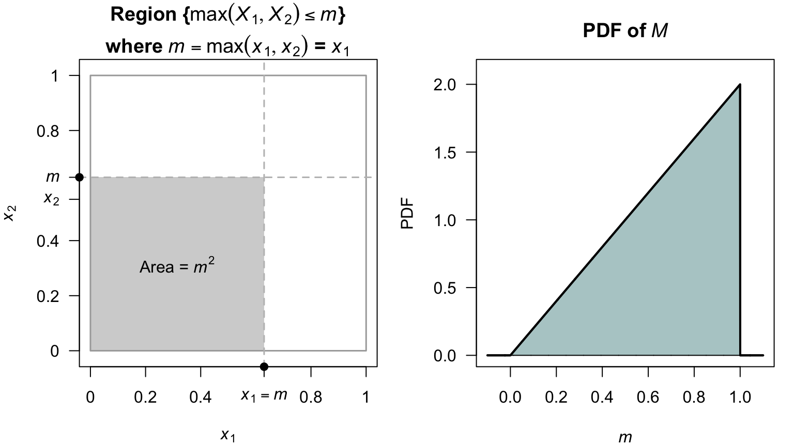
FIGURE 10.11: The joint distribution of the maximum from two uniform distributions.
10.13 Convolutions and sums of random variables
A very common transformation is the sum of two independent random variables; for example, the sum of two dice rolls; the sum of two waiting times; the sum of two measurement errors.
Effectively, the scenario is asking about the distribution of \(Z = X + Y\), where the distributions of both \(X\) and \(Y\) are known. The distribution of \(Z\) is easily found using, for example, the change of variable method (Sect. 10.12.1). This situation is so common that it has a special name: a convolution.
An alternative for determining the probability distribution of a sum of two random variables is to use the moment generating function method (Sect. 9.4): the MGF of \(Z = X + Y\) is: \[\begin{align*} M_Z(t) &= \operatorname{E}\left[\exp(t(X + Y))\right] \\ &= \operatorname{E}\left[\exp(tX) \cdot \exp(tY)\right] \\ &= \operatorname{E}\left[\exp(tX)\right] \cdot \operatorname{E}\left[\exp(tY)\right] \\ &= M_X(t) \cdot M_Y(t). \end{align*}\] However, MGFs do not always exist, and not always easy easy to invert (i.e., to recognise the distribution, or recover the probability function, from the resulting MGF). In addition, convolutions appear in other places also (such as order statistics; Sect. 13.4).
10.13.1 Definitions
The definition of a convolution is similar for discrete and continuous cases, using summations or integrations as appropriate.
Definition 10.16 (Convolution: discrete case) Let \(X\) and \(Y\) be independent discrete random variables with probability mass functions \(p_X(x)\) and \(p_Y(y)\), taking values on the integers (or a subset of the integers). The probability mass function of \(Z = X + Y\) is given by the convolution of \(p_X\) and \(p_Y\): \[ p_Z(z) = \Pr(X + Y = z) = \sum_{x} p_X(x) \cdot p_Y(z - x) \] where the summation is over all integers. We write \(p_Z = p_X * p_Y\).
The summation is over all integers; in practice, \(p_X(x)\cdot p_Y(z - x) = 0\) whenever either factor is zero. Therefore, for any given \(z\), summation is restricted to the set of \(x\) values where both these conditions hold simultaneously:
- \(x\) is in the support of \(X\) (i.e., \(p_X(x) > 0\)); and
- \((z - x)\) is in the support of \(Y\) (i.e., \(p_Y(z - x) > 0\)).
The convolution can also be written equivalently as \[ p_Z(z) = \Pr(X + Y = z) = \sum_{x} p_X(x) \cdot p_Y(z - x) = \sum_{y} p_X(z - y) \cdot p_Y(y). \]
Definition 10.17 (Convolution: continuous case) Let \(X\) and \(Y\) be independent continuous random variables with probability density functions \(f_X(x)\) and \(f_Y(y)\). The probability density function of \(Z = X + Y\) is given by the convolution of \(f_X\) and \(f_Y\): \[ f_Z(z) = \int_{-\infty}^{\infty} f_X(x) \cdot f_Y(z - x)\, dx. \]
We write \(f_Z = f_X * f_Y\).
The integration is over the entire real line; in practice, \(f_X(x)\cdot f_Y(z - x) = 0\) whenever either factor is zero. Therefore, for any given \(z\), integration is restricted to the set of \(x\) values where both conditions hold simultaneously:
- \(x\) is in the support of \(X\) (i.e., \(f_X(x) > 0\)); and
- \((z - x)\) is in the support of \(Y\) (i.e., \(f_Y(z - x) > 0\)).
The convolution can also be written equivalently as \[ f_Z(z) = \int_{-\infty}^{\infty} f_X(x) \cdot f_Y(z - x)\, dx = \int_{-\infty}^{\infty} f_X(z - y) \cdot f_Y(y)\, dy. \]
Example 10.39 (Sum of two dice) Consider rolling two dice, and finding the sum of the two numbers. Since rolling two dice are independent events, convolutions are appropriate.
Write \(X \sim \text{Discrete Uniform}(1, 6)\) and \(Y \sim \text{Discrete Uniform}(1, 6)\), and define \(Z = X + Y\). Then, \(p_X(x) = 1/6\) for \(x = 1, 2, \dots, 6\) and \(p_Y(y) = 1/6\) for \(y = 1, 2, \dots, 6\). Notice that the support of \(Z = X + Y\) is \(2, 3, \dots, 12\).
Using the convolution ideas, \(p_Z = p_X * p_Y\) where \[ p_Z(z) = \sum_x p_X(x) \cdot p_Y(z - x). \] So, for example: \[ p_Z(2) = \sum_x p_X(x)\, p_Y(2 - x) = \overbrace{p_X(1) \cdot p_Y(1)}^{\text{Put $x = 1$}} = \frac{1}{6}\times\frac{1}{6} = \frac{1}{36}, \] where we sum over just \(x = 1\) (where both probabilities are greater than zero). Also: \[\begin{align*} p_Z(4) &= \sum_x p_X(x)\, p_Y(2 - x)\\ &= \overbrace{p_X(1) \cdot p_Y(3)}^{\text{Put $x = 1$}} + \overbrace{p_X(2) \cdot p_Y(2)}^{\text{Put $x = 2$}} + \overbrace{p_X(3) \cdot p_Y(1)}^{\text{Put $x = 3$}} = \frac{1}{12}, \end{align*}\] where we sum over \(x = 1, 2, 3\).
As the above examples shows, care is needed with the summation limits; the convolution is only non-zero when both terms are non-zero (e.g., both \(p_X(z - y)\) and \(p_Y(y)\)). In the above two-dice example, this means the summation occurs when
- \(p_X(x) > 0\); that is, \(1\le x \le 6\); and also
- \(p_Y(z - x) > 0\); that is, \(1\le z - x\le 6\) or \((z - 6) \le x\le (z - 1)\).
Combining, this means the summation occurs over \[ \max(1, z-6) \le x\le \min(6, z-1). \]
Example 10.40 (Sum of two dice) Continuing Example 10.39, we could work more generally: \[\begin{align*} f_Z(z) &= \sum_{x = \max(1, z-6)}^{\min(6, z-1)} p_X(x) \, p_Y(z - x)\\ &= \sum_{x = \max(1, z-6)}^{\min(6, z-1)} \frac{1}{6} \times \frac{1}{6}\\ &= \frac{1}{36}[\max(1, z-6) - \min(6, z-1)] \end{align*}\] using the summation limits as discussed, and the probability mass functions. When \(2 \le z\le 7\), we find that \(\max(1, z-6) = 1\) and \(\min(6, z-1) = z - 1\); hence \(\max(1, z-6) - \min(6, z-1) = z - 1\) and so \[ p_Z(z) = \frac{z - 1}{36}\quad\text{for $z = 2, 3, \dots 7$}. \] Similarly, when \(7 < z \le 12\), \(\max(1, z-6) - \min(6, z-1) = z - 1\) and so \[ p_Z(z) = \frac{13 - z}{36}\quad\text{for $z = 8, 9, \dots 12$}. \] So the probability mass function of \(Z\) is \[ p_Z(z) = \begin{cases} (z -1)/36 & \text{for $z = 2, 3, \dots 7$}\\ (13 - z)/36 & \text{for $z = 8, 9, \dots 12$}. \end{cases} \]
Example 10.40 (Sum of two dice) In Example 10.39, we could have proceeded by using \[ p_Z(z) = \sum_Y p_X(z - y) \, p_Y(y). \] Then, for example: \[ p_Z(2) = \sum_y p_X(2 - y)\, p_Y(y) = \overbrace{p_X(1) \, p_Y(1)}^{\text{Put $y = 1$}} = \frac{1}{6}\times\frac{1}{6} = \frac{1}{36}, \] giving the same answer as in Example 10.39.
Example 10.41 (Convolution of two exponential distributions) Let \(X \sim \text{Exponential}(\lambda_1)\) and \(Y \sim \text{Exponential}(\lambda_2)\) be independent random variables with \(\lambda_1 \neq \lambda_2\). Find the density function of \(Z = X + Y\).
The supports are \(x > 0\) and \(y > 0\). In the convolution integral, \(f_X(x) > 0\) requires \(x > 0\), and \(f_Y(z - x) > 0\) requires \(z - x > 0 \implies x < z\). Hence, \(f_Z(z) = 0\) for \(z \le 0\), and for \(z > 0\), integration bounds run from \(x = 0\) to \(x = z\): \[\begin{align*} f_Z(z) &= \int_{0}^{z} \left( \lambda_1 e^{-\lambda_1 x} \right) \left( \lambda_2 e^{-\lambda_2 (z - x)} \right) dx \\ &= \lambda_1 \lambda_2 e^{-\lambda_2 z} \int_{0}^{z} e^{-(\lambda_1 - \lambda_2) x} \, dx \\ &= \lambda_1 \lambda_2 e^{-\lambda_2 z} \left[ \frac{e^{-(\lambda_1 - \lambda_2) x}}{-(\lambda_1 - \lambda_2)} \right]_0^z \\ &= \frac{\lambda_1 \lambda_2}{\lambda_1 - \lambda_2} e^{-\lambda_2 z} \left( 1 - e^{-(\lambda_1 - \lambda_2) z} \right) \\ &= \frac{\lambda_1 \lambda_2}{\lambda_1 - \lambda_2} \left( e^{-\lambda_2 z} - e^{-\lambda_1 z} \right), \quad z > 0 \end{align*}\] This is the hypoexponential distribution.
In the discrete case, the convolution between two sequences (i.e., probability functions), say px and py, is found using convolve(px, rev(py), type = "outer").
In the continuous case, the integration regions can be represented by discrete points (‘discretised’) and convolve() used again.
Alternatively, integrate() can be used directly.
Example 10.42 (Convolution (discrete) in R) Consider the convolution of \(X\sim\text{Pois}(\lambda = 2)\) and \(Y\sim\text{Pois}(\lambda = 3)\). In R:
# PMF of X ~ Poisson(2) and Y ~ Poisson(3) on 0:10:
x <- dpois(0:10, lambda = 2)
y <- dpois(0:10, lambda = 3)
# Discrete convolution
z_conv <- convolve(x, rev(y),
type = "open")
# Support for Z = X + Y runs from 0 to (length(x) + length(y) - 2)
z_support <- 0:(length(x) + length(y) - 2)
# Verify against exact theoretical Poisson(5) PMF at z = 0, 1, 2, 3, 4
# In the convolution, Index 5 corresponds to z = 4
cbind(z_conv[1:5], dpois(0:4, lambda = 5))
#> [,1] [,2]
#> [1,] 0.006737947 0.006737947
#> [2,] 0.033689735 0.033689735
#> [3,] 0.084224337 0.084224337
#> [4,] 0.140373896 0.140373896
#> [5,] 0.175467370 0.175467370Example 10.43 (Convolution (continuous) in R) Consider the convolution of \(X\sim\text{Exp}(\lambda = 0.10)\) and \(Y\sim\text{Exp}(\lambda = 0.05)\). Using the theoretical convolution results, the exact density is:
# Setiop
rate1 <- 0.10; rate2 <- 0.05
# Exact theoretical density function for sum of two Exponentials (l1 != l2)
f_Z_exact <- function(z, lambda1 = rate1, lambda2 = rate2) {
ifelse(z > 0,
(lambda1 * lambda2 / (lambda1 - lambda2)) *
(exp(-lambda2 * z) - exp(-lambda1 * z)),
0)
}The convolution can be evaluated using direct integration of Def. 10.17:
f_X <- function(x) dexp(x, rate = rate1)
f_Y <- function(y) dexp(y, rate = rate2)
# Pointwise convolution function for Z = X + Y
f_Z_single <- function(z) {
if (z <= 0) return(0)
# Integrate over non-zero overlapping support (0 to z)
integrate(function(x) f_X(x) * f_Y(z - x),
lower = 0,
upper = z)$value
}
# Use Vectorize(), to accept *vector* inputs for z
f_Z <- Vectorize(f_Z_single)The resulting function is compared to the exact density in Fig. 10.12.
Alternatively, the integration regions can be discretised, and then convolve() used as a means for approximating the exact density:
# Define grid parameters
delta <- 0.01
grid <- seq(0, 200, by = delta)
# Discretize PDFs
pdf_x <- dexp(grid, rate = rate1) * delta
pdf_y <- dexp(grid, rate = rate2) * delta
# Convolve discretized sequences
pdf_z_grid <- convolve(pdf_x,
rev(pdf_y),
type = "open")
# Support grid for Z
grid_z <- seq(0, 2 * max(grid), by = delta)The resulting density is compared to the exact density in Fig. 10.13 (left panel).
Using a coarser grid (e.g., delta <- 1 in the above code) produces a density that is less smooth and less accurate (Fig. 10.13, right panel).
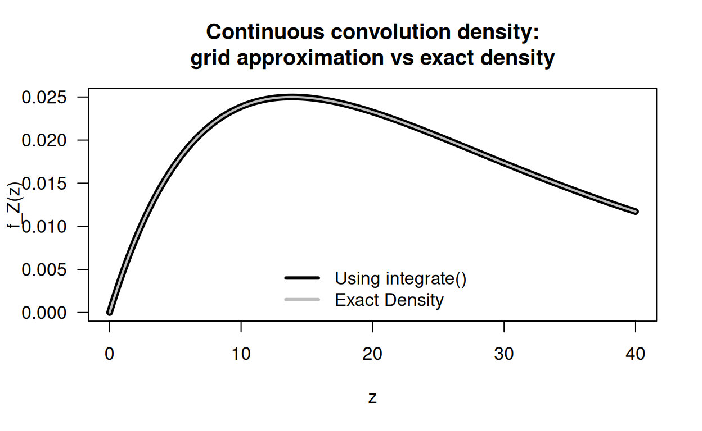
FIGURE 10.12: A continuous convolultion, comparing the exact density with the evaluation using direct integration.
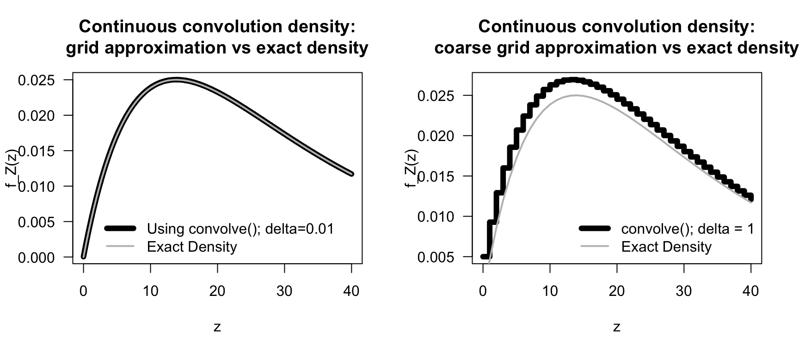
FIGURE 10.13: A continuous convolultion, comparing the exact density with a discretised density.
10.13.2 Properties of convolutions
The following are the basic properties of convolutions.
- Notation: A convolution is written as \(f_Z = f_X * f_Y\), since a convolution is operation on functions, that produces a new function as an output. Convolutions do not operate on numbers (such as \(f_X(x)\), which produces a number).
- Symmetry: Convolutions are symmetric: \(f_X * f_Y = f_Y * f_X\). In a convolution, it does not matter which variable is used ‘first’.
-
Support:
If \(X\) and \(Y\) have bounded support the sum or integral only runs over the values where both \(f_Z(z - y)\) and \(f_Y(y)\) (or \(p_Z(z - y)\) and \(p_Y(y)\) in the discrete case) are non-zero.
For example, for two \(\text{Uniform}(0, 1)\) distributions, the bounds on \(y\) depend on whether \(z < 1\) or \(z \ge 1\) (and so the triangular density has two pieces). - Independence: \(X\) and \(Y\) must be independent random variables.
10.13.3 Reproductive properties of common distributions
A family of distributions is closed under convolution if the sum of independent random variables from that family also belongs to the same family. The family of distributions is said to possesses the reproductive property)
Example 10.44 (The Poisson distribution is reproductive) Let \(X \sim \text{Poisson}(\lambda_1)\) and \(Y \sim \text{Poisson}(\lambda_2)\) be independent random variables with support \(x, y \in \{0, 1, 2, \dots\}\). For a given integer \(z \ge 0\), the sum is over \(x \in \{0, 1, \dots, z\}\); then the probability mass function of \(Z = X + Y\) is \[\begin{align*} p_Z(z) &= \sum_{x=0}^z p_X(x) \, p_Y(z - x) \\ &= \sum_{x=0}^z \left( \frac{\lambda_1^x e^{-\lambda_1}}{x!} \right) \left( \frac{\lambda_2^{z-x} e^{-\lambda_2}}{(z - x)!} \right) \\ &= \exp\left(-(\lambda_1 + \lambda_2)\right) \sum_{x=0}^z \frac{\lambda_1^x \lambda_2^{z - x}}{x!\, (z - x)!}. \end{align*}\] Multiply and divide inside the summation by \(z!\): \[ p_Z(z) = \frac{\exp(-(\lambda_1 + \lambda_2))}{z!} \sum_{x=0}^z \frac{z!}{x!\, (z - x)!} \lambda_1^x \lambda_2^{z-x}. \]
Recognizing the binomial expansion \(\sum_{x=0}^z \binom{z}{x} \lambda_1^x \lambda_2^{z-x} = (\lambda_1 + \lambda_2)^z\): \[ p_Z(z) = \frac{(\lambda_1 + \lambda_2)^z e^{-(\lambda_1 + \lambda_2)}}{z!}, \quad z = 0, 1, 2, \dots \]
Thus, \(Z \sim \text{Poisson}(\lambda_1 + \lambda_2)\). Thus the sum of two Poisson distribution produces another Poisson distribution; the Poisson distribution is reproductive.
Not all distributions have the reproductive property (for example, the sum of two discrete uniform distributions does not produce another discrete uniform distribution; Example 10.40). However, many common distributions do have the reproductive property (Table 10.13).
| Distribution family | Parameters | \(Z = X + Y\) | Condition |
|---|---|---|---|
| Poisson | \(X\sim\text{Poisson}(\lambda_1)\) \(Y\sim\text{Poisson}(\lambda_2)\) | \(Z\sim\text{Poisson}(\lambda_1 + \lambda_2)\) | Independence |
| Binomial | \(X\sim\text{Bin}(n_1, p)\) \(Y\sim\text{Bin}(n_2, p)\) | \(Z\sim\text{Bin}(n_1 + n_2, p)\) | Independence; common value of \(p\) |
| Negative binomial | \(X\sim\text{NegBin}(r_1, p)\) \(Y\sim\text{NegBin}(r_2, p)\) | \(Z\sim\text{NegBin}(r_1 + r_2, p)\) | Independence; common value of \(p\) |
| Normal | \(X\sim N(\mu_1, \sigma_1^2)\) \(Y\sim N(\mu_2, \sigma_2^2)\) | \(Z\sim N(\mu_1 + \mu_2, \sigma_1^2 + \sigma_2^2)\) | Independence |
| Gamma | \(X\sim\text{Gamma}(\alpha_1, \beta)\) \(Y\sim\text{Gamma}(\alpha_2, \beta)\) | \(Z\sim\text{Gamma}(\alpha_1 + \alpha_2, \beta)\) | Independence; common value of \(\beta\) |
10.14 The bivariate normal distribution
A specific example of a bivariate distribution is the bivariate normal distribution.
Definition 10.18 (The bivariate normal distribution) If a pair of random variables \(X\) and \(Y\) have the joint PDF \[\begin{equation} f_{X, Y}(x, y; \mu_x, \mu_Y, \sigma^2_X, \sigma^2_Y, \rho) = \frac{1}{2\pi\sigma_X\sigma_Y\sqrt{1 - \rho^2}}\exp(-Q/2) \tag{10.7} \end{equation}\] where \[ Q = \frac{1}{1-\rho^2}\left[ \left(\frac{x-\mu_X}{\sigma_X}\right)^2 - 2\rho\left( \frac{x-\mu_X}{\sigma_X}\right)\left(\frac{y-\mu_Y}{\sigma_Y}\right) + \left(\frac{y-\mu_Y}{\sigma_Y}\right)^2 \right], \] then \(X\) and \(Y\) have a bivariate normal distribution. We write \[ (X, Y) \sim N_2(\mu_X, \mu_Y, \sigma^2_X, \sigma^2_Y, \rho ). \]
Proving that \(\int^\infty_{-\infty}\!\int^\infty_{-\infty}f_{X,Y}(x,y)\,dx\,dy = 1\) is not straightforward and involves writing Eq. (10.7) using polar coordinates.
A typical graph of the bivariate normal surface above the \(x\)–\(y\) plane is shown below. The left plot shows the contours: where the height of the probability function are constant values. The right plot is a \(3\)-dimensional mesh plot.
FIGURE 10.14: A bivariate normal distribution. Left: a contour plot; right: a mesh plot.
Some important facts about the bivariate normal distribution are contained in the theorem below.
Theorem 10.7 (Bivariate normal distribution properties) For \((X, Y)\) with PDF given in Eq. (10.7):
- The marginal distributions of \(X\) and of \(Y\) are \(N(\mu_X, \sigma^2_X)\) and \(N(\mu_Y, \sigma^2_Y)\) respectively.
- The parameter \(\rho\) appearing in Eq. (10.7) is the correlation coefficient between \(X\) and \(Y\).
- the conditional distributions of \(X\) given \(Y = y\), and of \(Y\) given \(X = x\), are respectively \[\begin{align*} &N\left( \mu_X + \rho \sigma_X(y - \mu_Y)/\sigma_Y, \sigma^2_X(1 - \rho^2)\right); \\ &N\left( \mu_Y + \rho \sigma_Y(x - \mu_X)/\sigma_X, \sigma^2_Y(1 - \rho^2)\right). \end{align*}\]
Proof. Recall that the marginal PDF of \(X\) is \(f_X(x) = \int^\infty_{-\infty} f_{X, Y}(x, y)\,dy\). In the integral, put \(u = (x - \mu_X)/\sigma_X, v = (y - \mu_Y)/\sigma_Y,\, dy = \sigma_Y\,dv\) and complete the square in the exponent on \(v\): \[\begin{align*} g(x) &= \frac{1}{2\pi\sigma_X\sqrt{1 - \rho^2}\sigma_Y}\int^\infty_{-\infty}\exp\left\{ -\frac{1}{2(1 - \rho^2)}\left[ u^2 - 2\rho uv + v^2\right]\right\} \sigma_Y\,dv\\[2mm] &= \frac{1}{2\pi \sigma_X\sqrt{1 - \rho^2}}\int^\infty_{-\infty} \exp\left\{ -\frac{1}{2(1 - \rho^2)}\left[ (v - \rho u)^2 + u^2 - \rho^2u^2\right]\right\}\,dv\\[2mm] &= \frac{\exp(-u^2/2)}{\sqrt{2\pi} \sigma_X} \ \underbrace{\int^\infty_{-\infty} \frac{1}{\sqrt{2\pi (1 - \rho^2)}} \exp\left\{ -\frac{1}{2(1 - \rho^2)}(v - \rho u)^2\right\}\,dv}_{=1}. \end{align*}\] Replacing \(u\) by \((x - \mu_X )/\sigma_X\), we see from the PDF that \(X \sim N(\mu_X, \sigma^2_X)\). Similarly for the marginal PDF of \(Y\); i.e., \(f_Y(y)\).
To show that \(\rho\) in Eq. (10.7) is the correlation coefficient of \(X\) and \(Y\), recall that \[\begin{align*} \rho_{X,Y} &= \operatorname{Cov}(X,Y)/\sigma_X\sigma_Y=\operatorname{E}[(X-\mu_X)(Y - \mu_Y)]/\sigma_X\sigma_Y \\[2mm] & = \int^\infty_{-\infty}\!\int^\infty_{-\infty} \frac{(x - \mu_X)}{\sigma_X}\frac{(y - \mu_Y)}{\sigma_Y}f(x,y)\,dx\,dy\\[2mm] &= \int^\infty_{-\infty}\!\int^\infty_{-\infty} uv\frac{1}{2\pi\sqrt{1 - \rho^2} \sigma_X\sigma_Y}\exp\left\{ -\frac {1}{2(1 - \rho^2)}[u^2 - 2\rho uv + v^2]\right\} \sigma_X\sigma_Y\,du\,dv. \end{align*}\]
The exponent is \[ -\frac{[(u - \rho v)^2 + v^2 - \rho^2 v^2]}{2(1 - \rho^2)} = - \frac{1}{2} \left\{\frac{(u - \rho v)^2}{(1 - \rho^2)} + v^2\right\}. \] Then: \[\begin{align*} \rho_{X, Y} &=\int^\infty_{-\infty}\frac{v \exp(-v^2/2)}{\sqrt{2\pi}}\underbrace{\int^\infty_{-\infty} \frac{u}{\sqrt{2\pi (1 - \rho^2)}}\exp\{ -(u - \rho v)^2/2(1 - \rho^2)\}\,du}_{\displaystyle{= \operatorname{E}[U]\text{ where } u \sim N(\rho v, 1 - \rho^2) = \rho v}}\,dv \\[2mm] &= \rho \int^\infty_{-\infty} \frac{v^2}{\sqrt{2\pi}}\,\exp(-v^2/2)\,dv\\[2mm] &= \rho\quad \text{since the integral is $\operatorname{E}[V^2]$ where $V \sim N(0,1)$.} \end{align*}\]
In finding the conditional PDF of \(X\) given \(Y = y\), use \[ f_{X \mid Y = y}(x) = f_{X, Y}(x, y)/f_Y(y). \] Then in this ratio, the constant is \[ \frac{\sqrt{2\pi} \sigma_Y}{2\pi \sigma_X\sigma_Y \sqrt{1 - \rho^2}} = \frac{1}{\sqrt{2\pi}\sigma_X\sqrt{1 - \rho^2}}. \] The exponent is \[\begin{align*} & \frac{\exp\left\{ -\left[ \displaystyle{\frac{(x - \mu_X)^2}{\sigma^2_X}} - \displaystyle{\frac{2\rho(x - \mu_X)(y - \mu_Y)}{\sigma_X\sigma_Y}} + \displaystyle{\frac{(y - \mu_Y)^2}{\sigma^2_Y}}\right] / 2(1 - \rho^2) \right\} }{\exp\left[ -(y - \mu_Y)^2 / 2\sigma^2_Y\right]}\\[2mm] &= \exp\left\{ - \frac{1}{2(1 - \rho^2)} \left[ \frac{(x - \mu_X)^2}{\sigma^2_X} - \frac{2\rho (x - \mu_X)(y - \mu_Y)}{\sigma_X\sigma_Y} + \frac{(y - \mu_Y)^2}{\sigma^2_Y} (1 - 1 + \rho^2)\right] \right\}\\[2mm] &= \exp\left\{ - \frac{1}{2\sigma^2_X(1 - \rho^2)} \left[ (x - \mu_X)^2 - 2\rho \frac{\sigma_X}{\sigma_Y} (x - \mu_X)(y - \mu_Y) + \frac{\rho^2 \sigma^2_X}{\sigma^2_Y}(y - \mu_Y)^2\right]\right\}\\[2mm] &= \exp \left\{ - \frac{1}{2(1 - \rho^2)\sigma^2_X} \left[ x - \mu_X - \rho\frac{\sigma_X}{\sigma_Y}(y - \mu_Y)\right]^2\right\}. \end{align*}\] So the conditional distribution of \(X\) given \(Y = y\) is \[ N\left( \mu_X + \rho\frac{\sigma_X}{\sigma_Y}(y - \mu_Y), \sigma^2_X(1 - \rho^2)\right). \] Recall the interpretation of the conditional distribution of \(X\) given \(Y = y\) (Sect. 10.4) and note the shape of this density below.
Comments about Theorem 10.7:
- From the first and third parts, \(\operatorname{E}[X] = \mu_X\) and \(\operatorname{E}[X \mid Y = y] = \mu_X + \rho \sigma_X (y - \mu_Y)/\sigma_Y\) (and similarly for \(Y\)). Notice that \(\operatorname{E}[X \mid Y = y]\) is a linear function of \(y\); i.e., if \((X, Y)\) is bivariate normal, the regression line of \(Y\) on \(X\) (and \(X\) on \(Y\)) is linear.
- An important result follows from the second part. If \(X\) and \(Y\) are uncorrelated (i.e., if \(\rho = 0\)) then \(f_{X, Y}(x, y) = f_X(x) f_Y(y)\) and thus \(X\) and \(Y\) are independent. That is, if two normally distributed random variables are uncorrelated, they are also independent.
Example 10.45 (Bivariate normal: Heights) Heights of adults in large populations are often approximately normally distributed. Some studies suggest a small positive correlation between the heights of partners; for example, Badiou et al. (1988) shows a correlation of \(+0.364\) between the heights of husbands and wives. Since \(\rho > 0\), this implies taller men tended to marry taller women.
Using Badiou et al. (1988) as a guide, a model could be developed for the joint distribution for husbands and wives in Great Britain in 1980 (in millimetres), where \(\rho = +0.364\):
- Husbands: \(\mu_H = 1732\) and \(\sigma_H = 68.8\) and
- Wives: \(\mu_W = 1602\) and \(\sigma_W = 62.4\).
The \(3\)-dimensional joint probability function is difficult to plot in two-dimensions, but below shows two ways to do so.
The PDF for the bivariate normal distribution for the heights of the husbands and wives could be written in the form of (10.7) for the values of \(\mu_H\), \(\mu_W\), \(\sigma^2_H\), \(\sigma^2_W\) and \(\rho\) above, but this is tedious.
Given this model, what is the probability that a randomly chosen man in the UK in 1980 who is \(1730\,\text{mm}\) tall had married a woman taller than himself?
The conditional distribution of \(W \mid H = 1730\) is needed. This conditional distribution has mean \[\begin{align*} b &= \mu_W + \rho\frac{\sigma_W}{\sigma_H}(y_H - \mu_H) \\ &= 1602 + 0.364\frac{62.4}{68.8}\times(1730 - 1732) = 1601.34 \end{align*}\] and variance \[ \sigma_2^2(1 - \rho^2) = 62.4^2(1 - 0.364^2) = 377.85. \] In summary, \(W \mid (H = 1730) \sim N(1601.34, 3377.85)\). This conditional distribution has a univariate normal distribution, and so probabilities such as \(W > 1730\) are easily determined: \[\begin{align*} \Pr(W > 1730 \mid H = 1730) &= \Pr\left( Z > \frac{1730 - 1601.34}{\sqrt{3377.85}}\right) \\ &= \Pr( Z > 2.2137) = 0.013. \end{align*}\] Using this model, approximately \(1.3\)% of males \(1730\,\text{mm}\) tall had married women taller than themselves in the UK in 1980.
FIGURE 10.15: The bivariate normal model for heights.
10.15 Statistical computing with bivariate distributions
10.15.1 Discrete bivariate distributions
Consider the bivariate discrete distribution with the joint probability function shown in Table 10.14. The joint PMF can be defined in R as a matrix:
| \(y = 1\) | \(y = 2\) | |
|---|---|---|
| \(x = 1\) | 0.1 | 0.2 |
| \(x = 2\) | 0.3 | 0.1 |
| \(x = 3\) | 0.2 | 0.1 |
# Joint PMF as a matrix (rows = x, cols = y)
x_vals <- c(1, 2, 3) # The values for the variable X
y_vals <- c(10, 20) # The values for the variable Y
P <- matrix(c(0.1, 0.2, # The matrix contains the probabilities
0.3, 0.1,
0.2, 0.1),
nrow = 3, # The matrix has 3 rows
byrow = TRUE, # Fill the matrix with the data across rows
dimnames = list(x = x_vals, # The names for the rows...
y = y_vals)) #... and the columns
P
#> y
#> x 10 20
#> 1 0.1 0.2
#> 2 0.3 0.1
#> 3 0.2 0.1
sum(P) # Verify: the sum of probabilities is 1
#> [1] 1The marginal distributions can be found by summing over the rows or columns of the matrix as appropriate:
rowSums(P) # Marginal distribution of X: sum the rows
#> 1 2 3
#> 0.3 0.4 0.3
colSums(P) # Marginal distribution of Y: sum the columns
#> 10 20
#> 0.6 0.4The conditional distributions can also be found; for example, to find \(\Pr(X = x \mid Y = 10)\):
P[, "10"] / colSums(P)["10"] # "10" is the name of the column for "y = 10"
#> 1 2 3
#> 0.1666667 0.5000000 0.3333333To check if \(X\) and \(Y\) are independent, multiply the marginal distributions using outer():
outer(rowSums(P), # Element-by-element multiplication
colSums(P))
#> 10 20
#> 1 0.18 0.12
#> 2 0.24 0.16
#> 3 0.18 0.12
P # Compare to the joint PMF
#> y
#> x 10 20
#> 1 0.1 0.2
#> 2 0.3 0.1
#> 3 0.2 0.1The probabilities in the joint PMF are not the same: \(X\) and \(Y\) are not independent.
10.15.2 Continuous bivariate distributions
Consider the joint PDF in Example 10.21. The joint PDF can be written as an R function:
# Joint PDF: f(x,y) = 2(x + y) for 0 < x < y < 1
fXY <- function(x, y) {
ifelse( (x > 0) & (x < y) & (y < 1), # This defines the support, R
2 * (x + y), # If the values of x and y are within the defined region
0) # If the values are outside the defined region
}In R, the function integrate() can be used to evaluate one-dimensional definite integrals.
Using integrate() twice, we can verify that the joint PDF is valid: we use integrate() once in the \(x\)-direction and once in the \(y\)-direction:
# Verify integrates to 1 (integrate: y inner integral, x outer integral)
integrate(function(x) { # Integrate over x
sapply(x, # To each of these values...
function(xi) { # ... apply this function
integrate(function(y) fXY(xi, y),
lower = xi, # The lower y-integration limit
upper = 1)$value # The lower y-integration limit
})
}, lower = 0, # The lower x-integration limit
upper = 1)$value # The upper x-integration limit
#> [1] 1(sapply(X, FUN) is an R function that applies the function FUN to the elements of X.)
Marginal distributions can be found using integrate() also:
# Marginal of X at a specific value, say x = 0.3
integrate(function(y) {fXY(0.3, y)}, # The function fXY, with x set to 0.3
lower = 0.3,
upper = 1)$value
#> [1] 1.33
# Create a function: the marginal distn of X
fX <- Vectorize(function(x) {
integrate(function(y) fXY(x, y),
lower = x,
upper = 1)$value
})(Vectorize() allows the newly-created function fX() to accept vector inputs and return vector outputs.)
Probabilities can be found similarly; for example, to find \(\Pr(X < 0.5, Y < 0.8)\):
10.16 Exercises
Selected answers appear in Sect. F.9.
Exercise 10.1 The discrete random variables \(X\) and \(Y\) have the joint probability function shown in Table 10.15.
- Determine \(\Pr(X = 1, Y = 2)\)
- Determine \(\Pr(X + Y \le 1)\).
- Determine \(\Pr(X > Y)\).
- Find the marginal probability function of \(X\).
- Find the probability function of \(Y \mid X = 1\).
| \(y = 0\) | \(y = 1\) | \(y = 2\) | |
|---|---|---|---|
| \(x = 0\) | \(1/12\) | \(1/6\) | \(1/24\) |
| \(x = 1\) | \(1/4\) | \(1/4\) | \(5/24\) |
Exercise 10.2 The discrete random variables \(X\) and \(Y\) have the joint probability function shown in Table 10.16.
- Determine \(\Pr(X < 3, Y = 0)\)
- Determine \(\Pr(X + Y > 3)\).
- Determine \(\Pr(X > (Y/2) )\).
- Find the marginal probability function of \(Y\).
- Find the marginal probability function of \(X\).
- Find the probability function of \(Y \mid X = 1\).
| \(y = 0\) | \(y = 1\) | \(y = 2\) | \(y = 3\) | \(y = 4\) | |
|---|---|---|---|---|---|
| \(x = 1\) | \(0\) | \(2/15\) | \(1/15\) | \(1/15\) | \(0\) |
| \(x = 2\) | \(0\) | \(2/15\) | \(1/15\) | \(1/15\) | \(1/15\) |
| \(x = 3\) | \(1/15\) | \(2/15\) | \(2/15\) | \(1/15\) | \(0\) |
Exercise 10.3 The continuous random variables \(X\) and \(Y\) have the joint probability function \[ f_{X, Y}(x, y) = k\,(x + y^2) \] for \(0 < x < 1\) and \(0 < y < 2\).
- Determine the value of \(k\).
- Compute \(\Pr(X > 1/2, Y > 1)\).
- Compute \(\Pr(X + Y > 1)\).
- Find the marginal probability function of \(X\).
- Find the marginal probability function of \(Y\).
- Find the probability function of \(Y \mid X\).
- Find the probability function of \(Y \mid X = 1\).
- Find the probability function of \(X \mid Y\).
- Find the probability function of \(X \mid Y = 1\).
- Are \(X\) and \(Y\) independent random variables? Explain.
Exercise 10.4 The continuous random variables \(X\) and \(Y\) have the joint probability function \[ f_{X, Y}(x, y) = k\,(2 + x - y) \] for \(1 < x < 2\) and \(-1 < y < 1\).
- Determine the value of \(k\).
- Compute \(\Pr(X > 1, Y > 0)\).
- Compute \(\Pr(X + Y \ge 1)\).
- Find the marginal probability function of \(X\).
- Find the marginal probability function of \(Y\).
- Find the probability function of \(Y \mid X\).
- Find the probability function of \(Y \mid X = 1\).
- Find the probability function of \(X \mid Y\).
- Find the probability function of \(X \mid Y = 1\).
- Are \(X\) and \(Y\) independent random variables? Explain.
Exercise 10.5 A random vector \((X, Y)\) is defined so that \[ \Pr(X = 1) = 0.2;\quad \Pr(X = 2) = 0.3;\quad \Pr(X = 3) = 0.5. \] Then, \[\begin{align*} f_{Y\mid X = 1}(y) &= 1\quad\text{for $0 < y < 1$};\\ f_{Y\mid X = 2}(y) &= 0.5\quad\text{for $0 < y < 2$};\\ f_{Y\mid X = 3}(y) &= 1\quad\text{for $1 < y < 2$}. \end{align*}\]
- Determine the joint density–mass function.
- Find \(\Pr(Y > 1)\).
Exercise 10.6 A random vector \((X, Y)\) is defined so that \[ \Pr(X = -1) = 0.3;\quad \Pr(X = 1) = 0.7. \] Then, \[\begin{align*} f_{Y\mid X = -1}(y) &= 0.5\quad\text{for $-1 < y < 1$};\\ f_{Y\mid X = 1}(y) &= 0.25\quad\text{for $-2 < y < 2$}. \end{align*}\]
- Determine the joint density–mass function.
- Find \(\Pr(Y > 1)\).
Exercise 10.7 The pair of random variables \((X, Y)\) have the joint probability function given by \[ \Pr(X = x, Y = y) = k\,|x - y| \] for \(x = 0, 1, 2\) and \(y = 1, 2, 3\).
- Find the value \(k\).
- Construct a table of probabilities for this distribution.
- Find \(\Pr(X \le 1, Y = 3)\).
- Find \(\Pr(X + Y \ge 3)\).
Exercise 10.8 For what value of \(k\) is \(f(x,y) = kxy\) (for \(0 \le x \le 1\); \(0 \le y \le 1\), a valid joint PDF?
- Then, find \(\Pr(X \le x_0, Y\le y_0)\).
- Hence evaluate \(\Pr\left(X \le (3/8), Y \le (5/8) \right)\).
Exercise 10.9 For the random vector \((X, Y)\), the conditional PDF of \(Y\) given \(X = x\) is \[ f_{Y \mid X = x}(y) = \frac{2(x + y)}{2x + 1}, \] for \(0 < y <1\). The marginal PDF of \(X\) is given by \[ g_X(x) = x + \frac{1}{2} \] for \(0 <x < 1\).
- Find \(F_{Y\mid X=x}(y)\).
- Hence evaluate \(\Pr(Y < 3/4 \mid X = 1/3)\).
- Find the joint PDF \(f_{X, Y}(x, y)\), of \(X\) and \(Y\).
- Find \(\Pr(Y < X)\).
Exercise 10.10 Consider a random process where a fair coin is tossed twice. Let \(X\) be the number of heads observed in the two tosses, and \(Y\) be the number of heads on the first toss of the coin.
- Construct the table of the joint probability function for \(X\) and \(Y\).
- Determine the marginal probability function for \(X\).
- Determine the conditional distribution of \(X\) given one head appeared on the first toss.
- Determine if the variables \(X\) and \(Y\) are independent or not, justifying your answer with necessary calculation or argument.
Exercise 10.11 Two fair, six-sided dice are rolled, and the numbers on the top faces observed. Event \(A\) is the maximum of the two numbers, and Event \(B\) is the minimum of the two numbers. Then, define \(C\) as \(0\) if the maximum is odd, and as \(1\) otherwise; and define \(D\) as \(0\) if the minimum is divisible by three, and as \(1\) otherwise.
Construct the joint probability function for \(C\) and \(D\).
Exercise 10.12 Consider the joint PDF \[ f_{X, Y}(x, y) = c x(y + 1) \qquad \text{where $x + y < 2$ with $x > 0$ and $y > 0$}. \]
- Draw the region over which the joint PDF is defined.
- Compute the value of \(c\).
- Compute \(\Pr(Y < 1 \mid X > 1)\).
- Compute \(\Pr(Y < 1 \mid X > 0.25)\).
- Compute \(\Pr(Y < 1)\)
Exercise 10.13 Consider the joint PDF \[ f_{X, Y}(x, y) = k ( 1 - x) y \] where the region \(R\) is shown in Fig. 10.16 (left panel).
- Determine the value of \(k\).
- Compute \(\Pr(X > Y)\).
- Compute \(\Pr(X > 0.5)\).
Exercise 10.14 Consider the joint PDF \[ f_{X, Y}(x, y) = k (x + 2y) y \] where the region \(A\) is shown in Fig. 10.16 (right panel).
- Determine the value of \(k\).
- Compute \(\Pr(X > Y)\).
- Compute \(\Pr(X > 0.5)\).
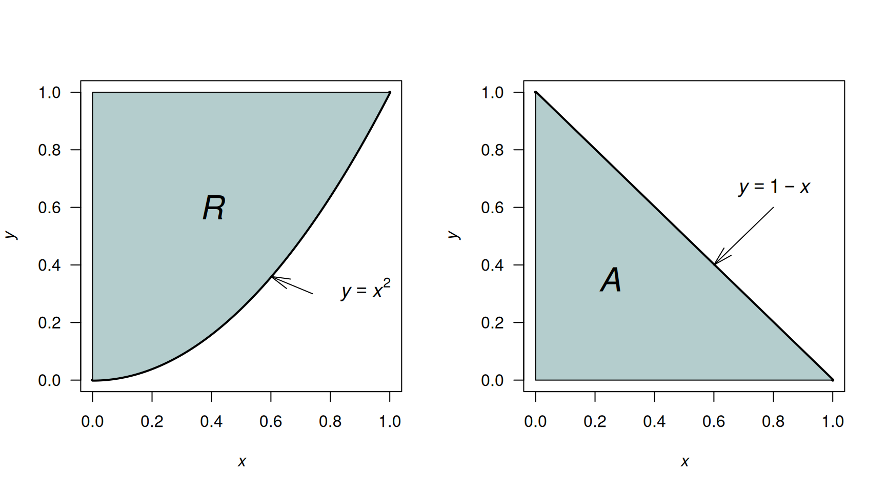
FIGURE 10.16: The region \(R\) (left) and the region \(A\) (right).
Exercise 10.15 Consider two random variables \(X\) and \(Y\) that have uniform distributions, with probability density functions \[\begin{align*} f_X(x) &= 1\quad\text{for $0 < x < 1$; and}\\ f_Y(y) &= 1\quad\text{for $0 < y < 1$} \end{align*}\]
- Using simulation, show that the distribution of \(X + Y\) has a triangular distribution.
- What is the mean and variance of the resulting distribution, based on the simulation?
- Explain how your answers change if the distribution of \(Y\) changes to \[ f_Y(y) = \frac{1}{2}\quad\text{for $-1 < y < 1$}. \]
Exercise 10.16 Consider the joint probability density function \[ f_{X, Y} = xy \] defined over the shaded region in Fig. 10.17 (left panel).
- Find the two marginal distributions.
- Find the conditional distribution \(X\mid Y=y\).
- Find the conditional distribution \(X\mid Y=1/2\).
Exercise 10.17 Consider the joint probability density function \[ f_{X, Y} = x + y \] defined over the shaded region in Fig. 10.17 (right panel).
- Find the two marginal distributions.
- Find the conditional distribution \(Y\mid X=x\).
- Find the conditional distribution \(Y\mid X=1\).
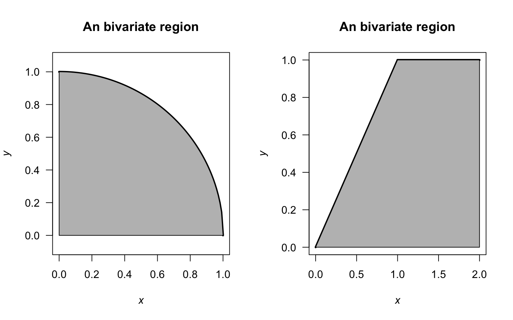
FIGURE 10.17: Two regions over which joint probability density functions are defined
Exercise 10.18 The random variable \(A\) has mean \(13\) and variance \(5\). The random variable \(B\) has mean \(4\) and variance \(2\). Assuming \(A\) and \(B\) are independent, find:
- \(\operatorname{E}[A + B]\).
- \(\operatorname{var}[A + B]\).
- \(\operatorname{E}[2A - 3B]\).
- \(\operatorname{var}[2A - 3B]\).
Exercise 10.19 Repeat Exercise 10.18, but with \(\operatorname{Cov}(A, B) = 0.2\).
Exercise 10.20 Suppose \(\operatorname{E}[X] = 2\), \(\operatorname{E}[Y] = 3\), \(\operatorname{var}[X] = 4\), \(9\operatorname{var}[Y] = 9\) and \(\operatorname{Cov}(X,Y) = 3\). Define \(U = 2X - Y\) and \(V = X + 2Y\).
- Find \(\operatorname{E}[U]\) and \(\operatorname{E}[V]\).
- Find \(\operatorname{var}[U]\) and \(\operatorname{var}[V]\).
- Find \(\operatorname{Cov}(U, V)\).
- Find \(\operatorname{Corr}(U, V)\).
Exercise 10.21 Suppose \(\operatorname{E}[X] = -1\), \(\operatorname{E}[Y] = 4\), \(\operatorname{var}[X] = 9\), \(\operatorname{var}[Y] = 1\) and \(\operatorname{Cov}(X,Y) = -2\). Define \(S = X + 3Y\) and \(T = 2X - Y\).
- Find \(\operatorname{E}[S]\) and \(\operatorname{E}[T]\).
- Find \(\operatorname{var}[S]\) and \(\operatorname{var}[T]\).
- Find \(\operatorname{Cov}(S, T)\).
- Find \(\operatorname{Corr}(S, T)\).
Exercise 10.22 The discrete bivariate random vector \((X_1, X_2)\) has the joint probability function \[ f_{X_1, X_2}(x_1, x_2) = (2x_1+ x _2)/6 \qquad \text{for $x_1 = 0, 1$ and $x_2 = 0, 1$}. \] Consider the transformations \[\begin{align*} Y_1 &= X_1 + X_2 \\ Y_2 &= \phantom{X_1+{}} X_2 \end{align*}\]
- Determine the joint probability function of \((Y_1, Y_2)\).
- Deduce the distribution of \(Y_1\).
Exercise 10.23 As in Example 10.38, consider the maximum of two independent continuous uniform distributions \(X_1\) and \(X_2\) defined on \([0, 1]\).
- Create an R simulation to show that the distribution of \(M = \max(X_1, X_2)\) is a \(\text{Beta}(2, 1)\) distribution. 2. Extend the simulation to show that the distribution of \(M = \max(X_1, \dots, X_n)\) is a \(\text{Beta}(n, 1)\) distribution for \(n = 3, 5\) and \(10\), for \(X_n \overset{\text{iid}}{\sim} \text{Uniform}(0, 1)\).
Exercise 10.24 Let \(X_1\) and \(X_2\) be independent exponential random variables with \(\lambda = 1\), such that both probability density functions are \[ f_{X_1}(x_1) = \exp(-x_1)\quad\text{for $x_1 > 0$} \quad\text{and}\quad f_{X_2}(x_2) = \exp(-x_2)\quad\text{for $x_2 > 0$}. \] That is, \(X_1, X_2 \overset{\text{iid}}{\sim} \text{Exponential}(\lambda = 1)\). Find the probability density functions for \(Y_1 = X_1 + X_2\) (the sum) and \(Y_2 = X_1 / X_2\) (the ratio).
Exercise 10.25 Let \(X_1\) and \(X_2\) be two independent Poisson random variables: \[\begin{align*} p_{X_1}(x_1) &= \frac{\lambda_1^{x_1} \exp(-\lambda_1)}{x_1!}\ \text{for $x_1 = 0, 1, 2, \dots$} \quad\text{and}\\ p_{X_2}(x_2) &= \frac{\lambda_2^{x_2} \exp(-\lambda_2)}{x_2!}\ \text{for $x_2 = 0, 1, 2, \dots$}. \end{align*}\] The joint probability function is \[ p_{X_1, X_2}(x_1, x_2) = \frac{\lambda_1^{x_1} \lambda_2^{x_2} \exp( -\lambda_1 - \lambda_2 )}{x_1!\, x_2!} \quad\text{for $x_1$ and $x_2 = 0, 1, 2, \dots$} \] Find the probability function of \(Y_1 = X_1 + X_2\).
Exercise 10.26 Consider Exercise 10.34. Find the marginal distribution of \(Y_1\).
Exercise 10.27 Consider Exercise 10.35. Find the marginal distribution of \(Y_1\).
Exercise 10.28 In an Australian Football League (AFL) game, teams score by kicking either a goal (worth \(6\) points) or a behind (worth \(1\) point). Suppose a team has a random number of scoring shots during a game. Let \(T\) denote the number of scoring shots, where \[ T\sim\text{Poisson}(22). \] Each scoring shot results in either a goal or a behind. Suppose each scoring shot is a goal independently, with probability \(p = 0.60\).
If \(G\) denotes the number of goals scored, then \[ G\mid T=t\sim\text{Binomial}(t, 0.60). \] The number of behinds is therefore \(B = T - G\). The team’s final score is \(S = 6G + B\). Assume that all scoring shots are independent.
Without using R, answer the following questions.
- Compute the expected number of goals scored.
- Compute the expected number of behinds scored.
- Compute the probability that exactly 20 scoring shots occur.
- Compute the probability that exactly 14 goals are scored, given that there are 20 scoring shots.
- Compute the expected final score.
Using R, simulate \(10\,000\) games and use the simulated data to estimate:
- the mean final score;
- the variance of the final score;
- the probability that the team scores at least 100 points;
- the probability that the team scores exactly 87 points;
- the distribution of the team’s final score.
Exercise 10.29 In a game of rugby league, teams can score points from four sources:
- a try (worth \(4\) points);
- a successful conversion (\(2\) points);
- a penalty goal (\(2\) points); or
- a field goal (\(1\) point).
A conversion is only attempted after a try is scored.
Suppose the number of tries \(T\), penalty goals \(P\) and field goals \(F\) scored by a team are modelled by \[ T\sim\text{Poisson}(4), \qquad P\sim\text{Poisson}(2) \qquad\text{and}\qquad F\sim\text{Poisson}(0.1), \] and that these variables are independent.
After each try, one conversion is attempted. Suppose each conversion is successful independently with probability \(p = 0.85\). If \(C\) denotes the number of successful conversions, then \[ C\mid T=t \sim \text{Binomial}(t, 0.85). \] Since a conversion is only attempted after a try, \(C \le T\). The team’s total score is \[ S = 4T + 2C + 2P + F. \] Without using R, answer the following questions.
- Compute the expected number of successful conversions.
- Compute the probability that exactly three tries are scored.
- Compute the probability that all conversions are successful, given that four tries are scored.
- Compute the expected team score.
Using R, simulate \(10\, 000\) games and answer the following questions.
- Use the simulated data to estimate the mean score.
- Use the simulated data to estimate the variance of the score.
- Use the simulated data to estimate the probability that the team scores at least \(30\) points.
- Use the simulated data to estimate the probability that the team scores exactly \(20\) points.
- Use the simulated data to estimate the probability mass function of \(S\).
Exercise 10.30 Each morning, a person walks from home to the beach, a distance of \(4\,\text{km}\), and then home again (again, \(4\,\text{km}\)). However, the walk to the beach is mostly downhill, and the return walk back home is mostly uphill. Thus, the time taken to walk to the beach (in hours) \(B\) has a \(\text{Normal}(\mu = 1, \sigma^2 = 0.02)\) distribution, but the time taken to walk back home (in hours) \(H\) has a \(\text{Gamma}(\alpha=40, \beta=1/30)\) distribution.
Use this information to answer the questions below.
- What is the mean and variance of the time to walk to the beach?
- What is the mean and variance of the time to walk back home?
- What is the mean and variance of the time for the whole trip (home to beach and back)?
- Create an R function to model the round trip, from home to the beach and back.
- Complete \(1\,000\) simulations, and hence find an approximation to the density function describing the walking time for the round trip.
- From the simulation, estimate \(\operatorname{E}[X]\) and \(\operatorname{var}[X]\).
- The fastest \(10\)% of times take what time?
- The slowest \(10\)% of times take what time?
- Form an interval containing the central \(50\)% of walk times.
Exercise 10.31 A hospital tracks patient throughput times \(S\) (in minutes) from admission to discharge. Patients go through two consecutive, independent stages:
- Stage 1 (\(T_1\)): Triage & Diagnostic Prep (nurse assessment, vital measurements, and initial diagnostic tests); modelled using \(T_1\sim\text{Exp}(\lambda_1 = 0.10)\).
- Stage 2 (\(T_2\)): Physician Consultation & Treatment (attending physician examination, procedure execution, and discharge setup); modelled using \(T_2\sim\text{Exp}(\lambda_2 = 0.05)\).
Then, \(S = T_1 + T_2\).
Use this information to answer the following questions.
- Find the mean and variance of the total throughput times \(S\).
- Find the probability density function of the throughput time.
- What is the probability that Stage 1 takes longer than Stage 2? That is, find \(\Pr(T_1 > T_2)\).
Exercise 10.32 Let \(X\) and \(Y\) be independent random variables, with \(X \sim \text{Uniform}\{1,2,3\}\) and \(Y \sim \text{Uniform}\{1,2,3\}\).
Exercise 10.33 Let \(X\) and \(Y\) be continuous random variables, where\(X, Y \sim \text{Uniform}(0,1)\) independently. Find the density of \(Z = X+Y\).
Exercise 10.34 Let \(X, Y \sim \text{Exponential}(\lambda)\), independent.
- Find the density of \(Z = X + Y\), and identify the distribution.
- Are exponential distributions closed under convolution?
- Use your result to find \(P(X + Y > 2)\) when \(\lambda = 1\).
Exercise 10.35 Let \(X \sim \text{Uniform}(0, 1)\) and \(Y \sim \text{Uniform}(0, 2)\), be continuous, independent random variables. Find the density of \(Z = X + Y\).
Exercise 10.36 Show that the Cauchy distribution (see Eq. (5.6)) has the reproductive property.